High Resolution Layer Vegetated Land Cover Characteristics - Algorithm Theoretical Basis Document (ATBD)
Copernicus Land Monitoring Service
Base Vegetation Layer (BVL), Temporal Convolutional Neural Network, Tree Cover Density (TCD), Dominant Leaf Type (DLT), Grassland Mowing Events (GRAME), Ploughing Indicator (PLOUGH), HR-VPP Plant Phenology Index, Transformer-based crop classification, Field-level growing season delineation, Fallow Land Presence
European Environment Agency (EEA)
Kongens Nytorv 6
1050 Copenhagen K
Denmark
https://land.copernicus.eu/
1 Executive summary
Copernicus is the European Union’s Earth Observation Programme. It offers information services based on satellite Earth observation and in situ (non-space) data. These information services are freely and openly accessible to its users through six thematic Copernicus services (Atmosphere Monitoring, Marine Environment Monitoring, Land Monitoring, Climate Change, Emergency Management and Security).
The Copernicus Land Monitoring Service (CLMS) is jointly implemented by the European Environment Agency and the European Commission’s DG Joint Research Centre (JRC) and provides geographical information on land cover and its changes, land use, vegetation state, water cycle and earth surface energy variables to a broad range of users in Europe and across the world in the field of environmental terrestrial applications. Within this service, the HighResolution Vegetated Land Cover Characteristics (HRL VLCC) product suite provides detailed annual maps and change layers for Tree Cover & Forests, Grasslands, and Croplands at resolutions of 10 meters (status layers) and 20 meters (change layers). The High-Resolution Vegetated Land Cover Characteristics products extend the time-series of the existing HRLs Forest and Grassland and complements the CLMS portfolio with new layer dedicated to the mapping of Crop Types and Agricultural practices such as mowing, harvest and cover crops.
The HRL VLCC products leverage advanced algorithms and multi-source satellite data, including Sentinel-2 imagery, to ensure high thematic accuracy. Key innovations include the Base Vegetation Layer (BVL), which harmonizes classifications across land cover types, and new agricultural monitoring capabilities such as crop type identification, ploughing indicators, and grassland mowing event detection. Complementary confidence layers quantify classification reliability for enhanced decision-making.
This document serves as a critical resource for understanding the scientific rigor behind HRL VLCC products, enabling their effective application in biodiversity conservation, agricultural monitoring, climate change adaptation, and compliance with EU policies such as the Common Agricultural Policy (CAP) and LULUCF regulation.
2 Background of the document
2.1 Scope
The Algorithm Theoretical Basis Document (ATBD) for the High-Resolution Vegetated Land Cover Characteristics (HRL VLCC) offers a comprehensive overview of the methodologies, algorithms, and workflows underpinning the generation of the HRL VLCC products.
2.2 Content and structure
In more detail, the document is structured as follows:
Chapter 1 contains the executive summary of the project together with a general information about European Union’s Earth Observation Programme and Copernicus Land Monitoring Service (CLMS),
Chapter 2 details the scope, content and structure of this document with a list of applicable documents,
Chapter 3 describes the general thematic content and product descriptions with the methodology and workflows,
and the References and Annex Chapters list references to the cited literature and documents.
3 Product Description
3.1 Base Vegetation Layer
The Base Vegetation Layer (BVL) is an internal processing layer to ensure better base consistency between the VLCC product groups Croplands, Grasslands and Tree Cover & Forests. The BVL provides a gap-free yearly mapping of the areas with tree cover and cropland and/or grassland. It also classifies a background class which comprises non-vegetated areas (e.g. bare ground, urban areas, water), lichens and mosses as well as shrubs (as long as not for agriculture such as vineyards). This section details the applied methods for the production of the BVL. An overview of the workflow is provided in Figure 1.
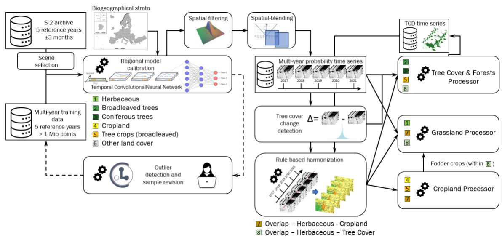
3.1.1 Input data
The main input data sources for the BVL are Sentinel-2 time-series covering the period for a respective reference years ± 3 months (e.g. for 2018 observations from 2016-10-01 till 2019-03-31 are considered). Initially the Scene Classification Layers (SCL) for all available S-2 L2A products and with a cloud coverage lower than 80% are retrieved and a time-series is constructed using the best (i.e. lowest cloud cover) scenes within a given spatio-temporal window. Typically,windows of 15 days and 20x20km are used, for parts of Scandinavia this has been augmented to 5 days and 10x10km to reduce the impact of frequent cloud cover.
The training / validation and test data required for the model calibration are compiled from various sources, such as from adjusted and filtered LUCAS (Eurostat, 2018) data of 2018, from stratified automated land cover (LC) class annotations based on existing land use/land cover maps, such as the CORINE Land Cover (CLC) 2018 and HRL Imperviousness 2018. Those are complemented with additional visual sample point photo-interpretation from Very High Resolution (VHR) imagery, Normalised Difference Vegetation Index (NDVI) time series and auxiliary datasets.
The initial training dataset comprises approximately 1.1 Million training points which are subjected to routines for detecting tree cover losses (based on NDVI time-series) as well as erroneous annotations and outliers related to general land cover changes (Cleanlab, Northcutt et al., 2021). Additional sampling is performed during the production on an ad hoc basis for particularly difficult areas.
3.1.2 Annual classification
Given the heterogeneity of the addressed European landscapes, all classifier training, testing and, finally, LC classification, is performed along substrata based on biogeographical regions (Metzger et al. 2013) and existing LC layers. The AOI is subdivided in 232 of these substrata which form the Production Units (PUs) (Figure 2). The goal of this stratification is to facilitate the fitting of the models to the regional specificities and thereby achieve a higher accuracy. The model architecture is a Temporal Convolutional Neural Network (TempCNN, Pelletier et al. 2019) which is trained with labels and filtered time-series (see section Input Data) of five reference years in the respective PU and a buffer area of 10km. Inference is performed on yearly time-series for the target reference year ± 3 months and outputs yearly probabilities for the 6 basic land cover classes:
herbaceous vegetation;
tree cover-broadleaved;
tree cover-coniferous
cropland;
tree crops (i.e. nomenclature overlap between broadleaved tree cover and permanent crops in the HRL Croplands product);
background class (including bare and sparsely vegetated areas and non-agricultural shrubs);
In a subsequent post-processing step two further classes are derived to delineate the:
potential overlap herbaceous – cropland (i.e. pixels which are classified as cropland and herbaceous at least once in the time-series);
The second derived class is derived from the intersection of all areas classified as tree cover and a preliminary version of the Tree Cover Density to delineate areas with low Tree Cover Density and hence allowed overlaps of herbaceous and tree cover.
The resulting Base Vegetation Layer is derived annually considering a time-window of five years (e.g. 2017 – 2021) to delineate the boundaries between grassland, cropland, tree cover and other land cover types (e.g. built-up areas, sealed areas, water, bare ground, permanent snow/ice, non-agricultural shrubs) not relevant for further processing steps within the HRL VLCC.
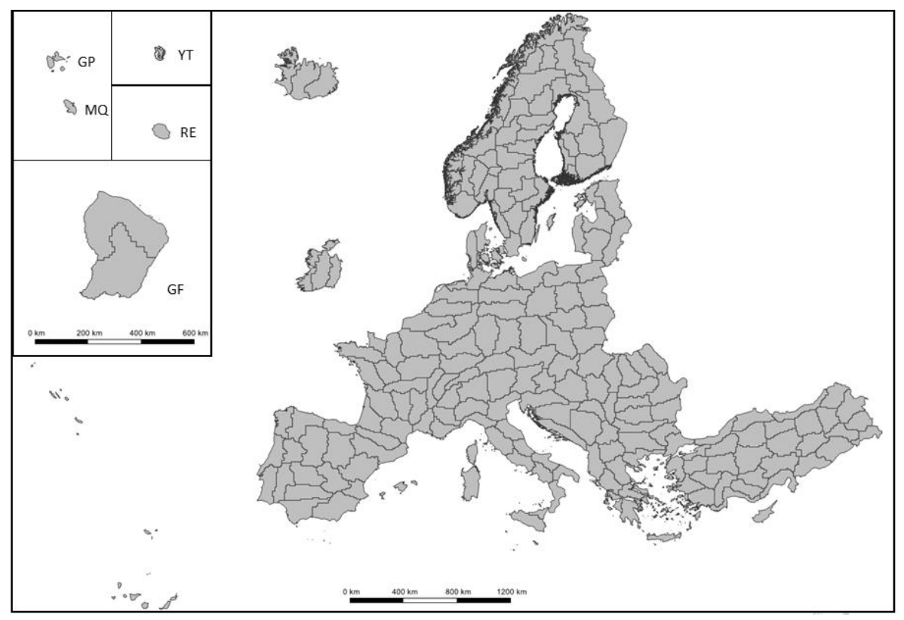
3.1.3 Post-classification processing
A sequence of post-processing steps is applied to improve the spatial and temporal consistency of the products. Spatial filtering aims to reduce salt and pepper noise and temporal filtering reduces frequent and implausible land cover changes (often along the class boundaries). The designation of overlap classes accounts for known overlaps in the nomenclatures and aims to minimize the inheritance of omission errors in the extent of herbaceous and cropland areas for further Grasslands and Croplands products.
An initial post-processing step involves applying bilateral filtering of the probabilities to reduce noise while preserving sharp spatial edges between land cover classes (Schindler 2012). This filtering is performed prior to rule-based harmonisation, ensuring that downstream products maintain spatially consistent classifications while avoiding excessive blurring at class boundaries and preserving ecologically meaningful edges. Subsequently the probabilities from any newly produced PU are blended with the readily available neighbouring PUs in an 10km overlap buffer. Within this buffer area the probabilities of all relevant PUs are averaged; the distance to the PU borders are used as a weight for the averaging to ensure seamless classification results.
In a further step change detection is performed to identify potential tree cover changes. To this end, the sum of the probabilities for tree cover (tree cover-broadleaved; tree cover-coniferous, tree crops) are considered; the difference of the sums is computed between the reference year at the intervals of the 3-yearly change layers (2018-2021-2024). Changes from a tree cover class to a non-tree cover class are allowed in the time-series if the difference of the tree cover probabilities exceed a certain threshold (see Section 3.2 for further details). Tree cover changes that do not exceed the thresholds are harmonized in the time-series to the class with the highest mean probability across a time-window of five years.
Finally, a rule-based postprocessing is applied to harmonize the 5-year classification, identify areas with potential overlaps among the different HRL VLCC products, and generate the final BVLs. Detected changes tree-cover changes are not modified by the rule-based processing.
The rules summarized in Table 1 are processed hierarchically so that latter rules overwrite the result of a previous rule for the same pixel:
Table 1: Overview of post-processing rules for the derivation of the harmonized annual BVLs.
| Rule # | Rule | Purpose |
|---|---|---|
| 1. | Five-year temporal sequences of herbaceous vegetation and the background class are recoded to sequences of herbaceous vegetation only. | Reduction of potential omission of herbaceous vegetation, especially in areas with dry grasslands. |
| 2. | Five-year temporal sequences of cropland and the background class are recoded to sequences of cropland only. | Avoid omission of temporarily fallow land from cropland processing extent. |
| 3. | Five-year temporal sequences of cropland and herbaceous vegetation are recoded to class 7overlap herbaceous – cropland. | Reduce propagation of uncertainties in BVL classification for downstream processing of croplands and grasslands. |
| 4. | Any pixel with co-occurrence of tree cover and Tree Cover Density <=10% in any of the last five reference years is assigned to class 6 overlaps of herbaceous and tree cover. | Account for the overlap of the definitions of the HRL Tree Cover & Forests and HRL Grassland layer. |
Those processing rules result into two further potential overlap classes being identified:
overlap herbaceous – cropland
overlaps of herbaceous and tree cover
Pixels with overlap herbaceous – cropland are then subject to further processing by both the Cropland and the Grassland processor. Specifically, pixels initially labelled as Fodder Crops in a preliminary version of the Crop Type (CTY) product are removed from the CTY product and now assigned to the Herbaceous (HER) layer.
Areas identified as overlaps of herbaceous and tree cover can be designated as both herbaceous and tree cover by the Grassland and Tree Cover & Forest processors, respectively. Similarly, areas identified as overlaps between crop and tree cover (i.e. tree crops) can appear in both the Cropland products and the Tree Cover & Forest products.
3.2 HRL Tree Cover & Forests
The HRL Tree Cover & Forests products comprise several annual status and 3-yearly change layers which are partially derived from the outputs of the BVL classification and combined with separate processing chain to estimate Tree Cover Density. This section details the applied methods for the production of the Tree Cover & Forests products. An overview of the workflow is provided in Figure 3.
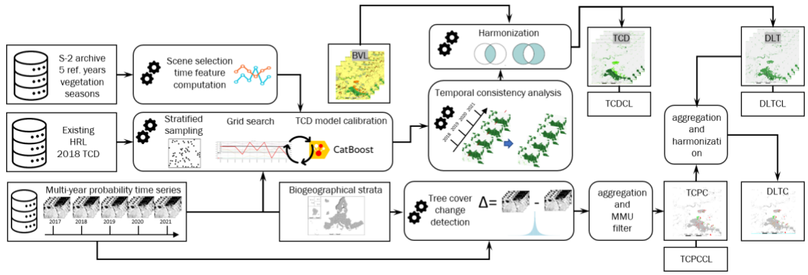
Dominant Leaf Type (DLT), Tree Cover Presence Change (TCPC) and Dominant Leaf Type Change (DLTC)
The BVL classification provides annual probabilities for coniferous trees, broadleaved trees and tree crops (e.g. fruit and olive trees). These probabilities serve as inputs for generating several forest-related products:
Yearly Dominant Leaf Type (DLT)
Yearly Tree Cover Presence Change (TCPC)
Yearly Dominant Leaf Type Change (DLTC)
The derivation process begins with the detection of tree cover losses and gains based on the sum of the probabilities for tree cover (tree cover-broadleaved; tree cover-coniferous, tree crops). The difference of the sums of these probabilities is computed between the reference years at the intervals t1 and t2 of the 3-yearly change layers (e.g. between 2018 and 2021). Regionally calibrated thresholds are then applied to these probability differences whereas:
Negative probability differences below the threshold are assigned as tree cover loss
Positive probability differences above the threshold are assigned as tree cover gain
Vice-versa all probability changes that do not exceed the thresholds are discarded. For these rejected changes the most probable class across the 5-year period is assigned instead. Both accepted and rejected changes are then propagated back into the annual DLT and BVL layers to ensure consistency. Accepted changes are propagated to the time-step which has the highest difference in the time-series.
For example: The probability difference over three years (e.g. 2018-2021) for tree loss is -60% and below a defined threshold of -45%. The change is accepted. In the three annual time steps (e.g. 2018-2019, 2019-2020, 2020-2021) the probability differences are -20%, +10%, -50%. In this case the change is allocated in the last time-step of the annual status layers.
From this process an initial change pixel-based 3-annual change mask is obtained. This mask is aggregated to 20m resolution using the aggregation rules detailed in Annex I. To derive Tree Cover Presence Change (TCPC) a Minimum Mapping Unit (MMU) filter is applied (see Annex II for details) to:
Eliminate change patches smaller than 1 hectare
Fill small gaps within valid change patches
For the derivation of the Dominant Leaf Type Change (DLTC) the first step is the computation of a pixel-wise differences of the DLTs at t1 and t2 and its subsequent aggregation to 20m using the aggregation rules defined in Annex I. This raw version of the DLTC is subsequently masked and harmonized with the TCPC. For patches filled during the MMU filtering of the TCPC the leaf type information is complemented based on the majority of the surroundings in the raw DLTC to assure full consistency between TCPC and DLTC.
3.2.1 Tree Cover Density (TCD)
For the annual Tree Cover Density (TCD) layer (starting with the reference year 2018), the median spectral values of Sentinel-2 bands (B02, B03, B04, B08, B11 and B12) are computed for the vegetation season of each reference year. In areas, affected by persistent snow or heavy cloud cover alternative percentiles of the respective bands are used to minimize potential artefacts in the product. These spectral inputs are complemented by the mean classification probabilities for coniferous trees, broadleaved trees and tree crops resulting from the BVL classification.
To train the model, reference samples are drawn from the previous version of HRL TCD 2018 using a stratified sampling approach over areas with stable tree cover across all 5 reference years. A CatBoost regression model (Dorogush et al. 2018) is then trained with these yearly input data for the respective production unit and used to estimate the TCD for each reference year over the full extent of the PU. The model calibration involves a grid-search during which different degrees of oversampling of lower and highest TCD value ranges are tested. The aim of this gridsearch is to reduce the underestimation of these values ranges in the final layer.
In a subsequent post-processing step, the yearly TCD are harmonised by applying a histogram matching technique (Coltuc et al. 2006) and an additional smoothing step to limit sudden implausible spikes in the TCD over time. Lastly, the DLT classification is applied on top of the TCD to mask out non-tree covered areas, ensuring the final product reflects only valid tree cover.
A series of further layers is derived from the TCD, DLT as well of other ancillary datasets. An overview of the dependencies of these derived products is provided in Figure 4 and detailed in the following paragraphs.
3.2.2 Forest Additional Support Layer (FADSL)
The Forest Additional Support Layer (FADSL) at 10m spatial resolution is used to separate real “forest” areas from non-forest areas (i.e. trees predominantly used for agricultural practices, trees in urban context) in order to derive a Forest Type product which is largely following the FAO definition. The respective areas are derived through a rule-based spatial intersection of the 10m DLT and TCD layers with CLC 2018 and IMD 2018.
- Generation of a binary mask with
0: non-impervious: HRL IMD == 0
1: impervious: HRL IMD > 0
Filtering of all contiguous all non-impervious patches < 25 ha which are fully surrounded by impervious areas in a 4-pixel connectivity mode and subsequently reclassification to 1 = all impervious areas.
Hierarchical intersection of the DLT (with TCD ranging from 10-100%), CLC 2018 (vector geometries rasterized at 10m spatial resolution) and the gap-filled imperviousness dataset as detailed in Table 2 .
Table 2 FADSL - hierarchical intersection of input layers and resulting thematic classes
| Order | DLT Class | CLCClass | IMDClass | FADSLClass | Class Description |
|---|---|---|---|---|---|
| 1.) | 1 or 2 | any | 1 | 4 | trees in urban context – broadleaved and coniferous (from HRL Imperviousness context) |
| 2.) | 1 or 2 | 141 | 0 | 5 | trees in urban context – broadleaved and coniferous (from CLC class 1.4.1) |
| 3.) | 1 | 222or223 | any | 3 | trees predominantly used for agricultural practices – broadleaved (from CLC classes 2.2.2 and 2.2.3) |
| 255 | any | any | 255 | outside area (predefined through boundary layer) | |
| any other remaining combination | any other remaining combination | any other remaining combination | 0 | all non-tree areas, and tree cover without urban context or agricultural use |
It is worth mentioning that the derived delineation of non-forest tree cover areas has certain limitations due to the specifications and thematic accuracies of the different input data (DLT with density values ranging from 10-100%; CLC 2018 with 25 ha MMU; IMD 2018 also representing infrastructure). This includes the frequency and timelines of updates which imposes the need use input layers that predate the actual reference year of the FTY (e.g. FTY 2021 was produced using still CLC 2018 and the first version of the HRL IMD 2018.
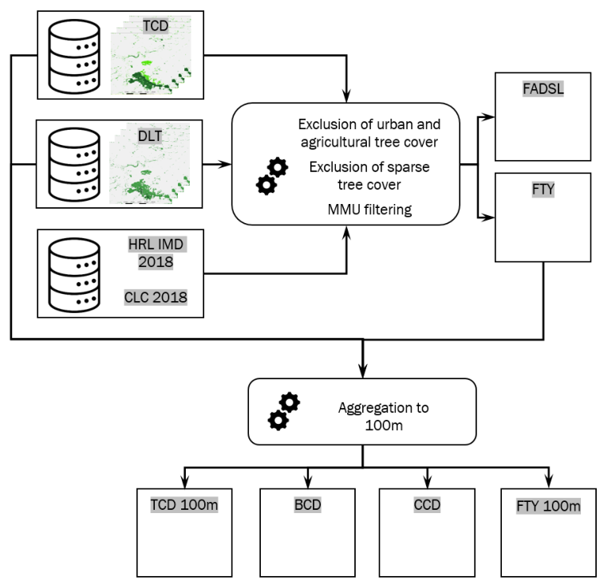
3.2.3 Forest Type (FTY)
The Forest Type (FTY) layer implements forest maps largely following the definition provided by the Food and Agriculture Organization (FAO), as specified in the terms and definitions of the Global Forest Resources Assessment (FRA) Working Paper 1 (FAO, 2012). The 10m FTY product is computed by applying the FAO´s definition, however, for EEA-specific purposes, it explicitly includes tree cover in traditional agroforestry systems, such as Dehesa and Montado, which are typically excluded under standard FAO criteria.
In a first step an intermediate tree cover mask product is derived through spatial intersection of the two primary status layers TCD (≥ 10-100%) and *DLT, where areas under agricultural use and in urban context as provided by the FADSL are excluded. To ensure consistency with the specified Minimum Mapping Unit (MMU) of 0.5 hectares (equivalent to 50 pixels), the resulting tree cover mask is refined using the GDALSieve1 operation. This operation removes small patches below the MMU and fills in small gaps. The output is used to create an initial version of the Forest Type product, that is still missing information in areas, which were filled and marked as tree cover during the sieving process. Furthermore, an ancillary mask is created by mapping these specific pixels with no data values. The GDALFillNodata2 function is used to assign values to the pixel shown in the ancillary mask by using an inverse distance weighting algorithm to fill NoData areas based on the values of surrounding pixels. In the last formatting step those interpolated areas and the initial Forest Type version are combined to form the final Forest Type product, which is finally aligned to the processing extent as given in the official Boundary Layer (EEA, 2023).
3.2.4 Aggregated products - Tree Cover Density (TCD) 100m, Broadleaved Cover Density (BCD) & Coniferous Cover Density (CCD)
The TCD at 100m spatial resolution is derived through spatial aggregation from the 10m TCD status layer for the respective reference year. The 100m LAEA grid is used to calculate the arithmetic mean density of all underlying 10m pixels (with density values from 0-100) for each 100m cell. The thereof resulting mean values from the aggregation (floating point data type) are rounded and finally converted to integer values (e.g. raw values in the range from 33.5 to 34.4 are converted to a density value of 34).
Several further layers are derived through operations of intersection and aggregations including Broadleaved Cover Density (BCD) and Coniferous Cover Density (CCD) layers. BCD is the aggregated density of broadleaved trees and shows the percentage of broadleaved pixels in the DLT for the respective reference year while CCD is the aggregated density of coniferous trees and shows the percentage of coniferous pixels. Both BCD and CCD layers are derived through aggregation of the 10m DLT. The 100m LAEA grid is overlaid to the 10m DLT product. Within each 100m cell the number of broadleaved and coniferous pixels are counted and the respective percentages stored into 100m pixel of the CCD and BCD, respectively.
3.2.5 Aggregated products - Forest Type (FTY) 100m
The FTY at 100m spatial resolution is derived through spatial aggregation from the FTY 10m status layer based on the spatially consistent EEA 100m grid. The first step is to identify forest covered 100m cells by counting and summing up all forest pixels (broadleaved and coniferous) of the 10m FTY product within the respective grid cell. If the number of forest pixels is ≥ 50, the 100m grid cell is assigned to “forest cover”. In case a 100m cell contains less than 50 forest covered 10m pixels, it will be labelled as all non-forest areas in the final product.
After identifying the forest areas, the CORINE Land Cover definition for broadleaved, coniferous and mixed forest is applied. The class broadleaved forest is assigned in 100m grid cells, which contain ≥75% forest pixels belonging to broadleaved. If a 100m grid cells consists of ≥ 75% coniferous pixels within the forested area it is assigned to coniferous forest. Areas in which neither “broadleaved” nor “coniferous” constituents account for ≥75% of the 10m forest pixels are labelled as mixed zones.
3.2.6 Dominant Leaf Type Confidence Layer (DLTCL)
The DLTCL uses the probabilities gained during BVL/DLT computation from the Temporal convolutional neural network to compute classification confidence. The classification confidence is considered here as the probability margin between the highest and second highest ranked leaf type class. The margin is derived by calculating the absolute difference values of probabilities for coniferous and broadleaved tree cover classes. High confidence (up to 100%) indicates domination of one class, whereas lower values (close to 0%) are typical for areas with similar probabilities, suggesting uncertainty or mixed tree cover types.
3.2.7 Tree Cover Density Confidence Layer (TCDCL)
The TCDCL uses the Total Uncertainty (Variance) metric calculated from CatBoost algorithm to derive the standard deviation for each estimated TCD value. Total uncertainty is the sum of data and knowledge uncertainty. The former can be seen as a measure for data complexity due to noisy data or overlapping classes. Knowledge uncertainty is obtained from a single CatBoost model by using virtual ensembles (Malinin et al. 2020). If this option is enabled during the CatBoost run the one existing model is basically divided into (n) separate models. The annual TCD production was done with ()=10. Based on these 10 models Knowledge uncertainty is computed by the variance of the mean values predicted by all models. Low TCDCL values indicate high confidence in the estimated TCD value.
3.2.8 Tree Cover Presence Change Confidence Layer (TCPCCL)
The TCPCCL relies as well on the probabilities for coniferous and broadleaved tree cover classes gained during BVL/DLT computation to calculate change confidence. The change confidence here refers to the change in combined tree cover probability from 2018 to 2021. This is done by summing up the probabilities for coniferous and broadleaved tree cover classes for each reference year and afterwards the absolute difference is calculated between 2018 and 2021 respectively. High values signal a big difference between both years and thus a high confidence in change detection, whereas lower values indicate some uncertainty.
3.2.9 Encountered issues and known limitations
Omission of sparse tree cover is commonly known challenge for tree cover mapping since lower canopy cover leads to a mixed reflectance signal that becomes increasingly dominated by the understory. The issue is further aggravated by imperfections of the multi-temporal coregistration of the Sentinel-2 data. Sparse tree cover is common at the timber line but in particular in the Mediterranean comprising agroforestry systems (Dehesas, Montados) and Olive Groves. Initial classifications for the Iberian Peninsula and Southern Italy revealed large areas of Olive Groves and Dehesas which triggered a reprocessing. This included the revision of approximately 7000 additional samples and the collection of around 5500 additional tree cover samples. Retraining the model with the revised sample database indeed provided major improvements. Further enhancements were implemented also in the post-processing to boost tree cover probabilities in areas designated as Agroforestry, Olive Groves and other type of tree cover according to the Corine Land Cover layer for 2018. An example for the status of the DLT before and after the reprocessing is provided in Figure 5. Though the reprocessing has significantly reduced the amount of omission errors, tree cover omission is generally still more pronounced in the Mediterranean region.
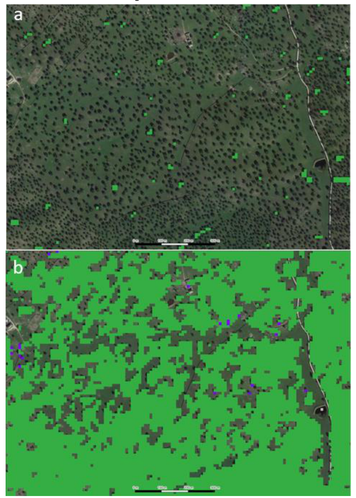
The employed regression-based method for the estimation of the Tree Cover Density is generally sensitive to the propagation of artefacts resulting from cloud cover and topographic effects from the input satellite imagery. The usage of median time features is in most cases robust to such artefacts but some issues have been encountered frequently, not all of which could be fully resolved in the final layers.
This concerns topographic effects where cast shadows result in dark features in the imagery and an overestimation of the TCD. Similarly, the topographic correction of the Sentinel-2 L2A processor tends to overestimate reflectance on north and north-west facing slopes which in turn can lead to an underestimation of the TCD. Such topographic effects are typically more pronounced at higher latitudes with lower sun angles. An example is provided in Figure 6.
Underestimations and spatial patterns that are not related to actual variations of the canopies can also be caused by cloud cover. On the one hand, this can be caused by clouds that are not detected in the SCL accompanying the Sentinel-2 L2A data. On the other hand, frequent cloudcover during the peak period of the vegetation season can lead to a higher impact of scenes from early spring that may depict broadleaved deciduous tree (especially those with later leaf emergence such as Fagus and Quercus) still with leaf off conditions. A rigorous quality control was conducted to detect such artefacts and adjust parameters for median time-feature computation as much as possible. This included for example the usage of shorter time-windows (starting only in May) or alternative statistical metrics such as 25th- and 75th percentiles. While this enabled to significantly reduced the amount of artefacts as illustrated in Figure 7, it was not possible to fully resolve all cases encountered.
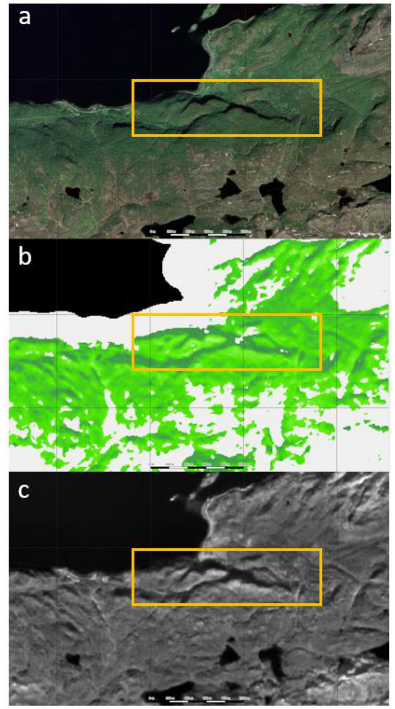
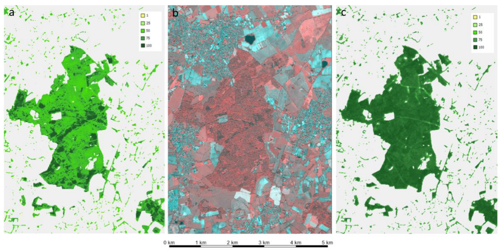
3.3 HRL Grasslands status and change layers
This section gives an overview of the methodology employed to produce the layers Herbaceous Cover (HER), Ploughing Indicator (PLOUGH), Grassland (GRA) and Grassland Change (GRAC).
3.3.1 Input data
All grassland products described in the following subsections are based on a common set of input and auxiliary data. The main source of information is the Base Vegetation Layer (BVL), specifically the probability associated with the herbaceous class serves as a starting point for subsequent derivations.
In addition to the BVL, different sets of auxiliary data are needed:
Corine Land Cover (CLC 2018)3 (to dampen the probability of certain areas)
CLCplus Backbone 2018 (CLCplus BB)4 (as reference to derive probability thresholds)
HRL Grassland 20185 (as reference to derive probability thresholds)
Previous version of HRL Ploughing Indicator 2018 (to mark ploughing events before availability of S2 data in 2017)
3.3.2 Herbaceous Cover (HER)
The production of the Herbaceous Cover (HER) is primarily based on the probability estimates obtained from the Base Vegetation Layer (BVL) which also serves to harmonise the different vegetated HRL products, including HRL Grasslands, Tree Cover & Forests and Croplands. The BVL is created annually (2017-2021) and using probability estimates of various land cover types.
To derive the herbaceous layer, various operations are performed on the probability estimates to either locally increase or decrease the herbaceous probabilities. The Corine Land Cover (CLC) 2018 layer is applied to weight the probabilities for some classes such as peat bogs, sclerophyllous vegetation and others to eliminate false positives from the 2018 reference year classification. To determine the final herbaceous layer, a suitable threshold must be established for each processing unit (i.e. EEA tile). Probabilities above this threshold are considered to be herbaceous. The thresholds are calibrated using additional CLMS products, the previous version of HRL Grassland 2018 and CLC 2018. The BVL herbaceous probabilities are compared with all matching pixels from these layers. This ensures that only pixels are considered where both layers indicate the same land cover type. The threshold is chosen dynamically by finding the probability which maximizes the accuracy between the herbaceous BVL probability and the CLMS products. To avoid a too general (or even constant) threshold for the whole EEA tile, the accuracy is matched in 16 sub-tiles and then interpolated over the whole tile using a Gaussian filter. This process ensures that strong differences in landscape and vegetation within an EEA tile are still addressed.
To further tune these HER thresholds a manual inspection using visually interpreted sample points is conducted. In case of strong over- or underestimation the process can be rerun manually forcing the algorithm to use increased or decreased thresholds.
Moreover, the probabilities between yearly layers are harmonized to reduce rapid changes that are often due to classification noise. This achieved by calculating the (fast) Dynamic Time Warp (DTW) of the time-series of two subsequent years using the Vegetation Phenology and Productivity– Plant Phenology Index (HR-VPP PPI)6 time-series (Salvador et. al. 2007). All yearly binary HER layers are finally determined by applying the threshold found in the procedure described above. Further details follow in the Grassland Change (GRAC) layer section 3.3.6.
Additionally, the binary HER layer is enriched with information from the Crop Types (CTY) layer. All pixels classified as fodder crop (class 1500) are included (for each year respectively) in the binary HER layer. Finally, the herbaceous extent is clipped to the yearly BVL.
The following steps are needed to derive the herbaceous products:
Retrieve herbaceous probability estimates from BVL herbaceous class.
Find threshold in reference year by maximizing accuracy when compared to CLMS products
Tune probability estimates
Dampen probabilities of selected classes using CLC 2018 to eliminate false positives.
Harmonize probabilities between yearly layers to reduce rapid changes.
Apply threshold to all years to determine binary layers
Mask herbaceous layer
Data outputs (creation of the Cloud-Optimized-GeoTiffs, colortables, metadata)
3.3.3 Ploughing Indicator (PLOUGH)
The PLOUGH indicator is generated by analysing a combination of data sources: a series of binary HER (herbaceous) classification layers, BVL (Base Vegetation Layer) classes, and HR VPP PPI (Plant Phenology Index) quantiles.
BVL classes 4 (crop) and 7 (transition between herbaceous and crop) are used as indicators of a ploughing event.
Low PPI quantiles signal periods of low vegetation, which may correspond to ploughing activity.
For reference years before 2017, where data is missing, the system uses ploughing records from the historic PLOUGH (HIS-PLOUGH) product, which can introduce certain inconsistencies (see section 3.3.9).
The algorithm works by detecting the first break in a continuous series of HER classifications—a potential sign of ploughing. If such a break is found, it’s labelled as a “possible ploughing event” and is then cross-checked with both the PPI data and BVL classification to confirm if ploughing actually occurred.
If the break is confirmed, it’s recorded as a ploughing event.
If it’s not confirmed, the pixel is either:
Reclassified as HER (if the BVL suggests it’s still herbaceous because it’s inside a crop class), or
Assigned to Class 100, indicating a change in HER cover but not due to ploughing.
If no break is found, the pixel is excluded from the PLOUGH layer but will still be included as grassland in the GRA layer. See Figure 8 for a visualization of the workflow as a flowchart.
To reduce salt-and-pepper noise, the final PLOUGH layer is filtered using a minimum mapping unit (MMU) of 0.03 ha (i.e. 3x10m pixels). Since the processing based on 100km tiles, this step includes gathering intermediate version of all neighbouring tiles to avoid edge-effects at the tile borders.
Data outputs include the creation of Cloud-Optimized GeoTIFFs, accompanying colour tables, and detailed metadata.
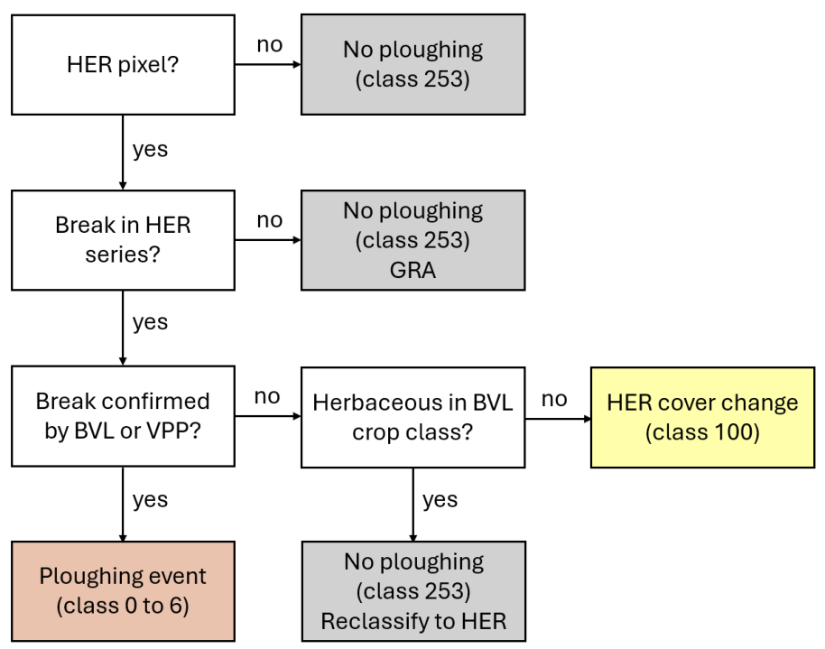
3.3.4 Grassland (GRA)
The Grassland (GRA) layers are directly derived from the Herbaceous Cover (HER) and Ploughing (PLOUGH) layers. A pixel is considered to be grassland if it has been herbaceous for five consecutive years7. To retrieve this information the corresponding binary HER layer is masked with the corresponding PLOUGH layer, leaving only HER pixels which have not been ploughed in the previous year.
Like the HER layer, each Grassland layer is clipped to the yearly BVL extent and filtered to a MMU of 0.03 ha. However, only class 1 of the BVL is used to mask the GRA layer (unlike classes 1, 6 and 7 for HER), since overlaying classes 6 and 7 do not allow grassland classifications.
The following steps are needed to derive the HRL Grasslands layers:
Mask binary Herbaceous Cover (HER) with ploughing indicator to determine grassland layer
Mask Grassland (GRA) layer to yearly BVL (class 1 only)
Application of the MMU 0.03 ha (i.e. of 3 x 10m pixels). Since the processing based on 100km tiles, this step includes gathering intermediate version of all neighbouring tiles to avoid edge-effects at the tile borders.
Finalizing steps (creation of the Cloud-Optimized-GeoTiffs, colortables, metadata)
The application of the MMU and the finalization steps are performed only after all tiles have been processed to also take border regions of adjacent tiles into account.
3.3.5 Grassland Confidence (GRACL)
The Grassland Confidence Layer (GRACL) gives an estimate of how confident the classification was in predicting a certain grassland pixel. It is derived as the mean taken over the respective herbaceous confidence values. These are not an actual layer but are still derived in the workflow process. The herbaceous confidence for any year is the difference between an herbaceous probability taken from the BVL and the second highest probability. Therefore, the higher the herbaceous probability is, the greater the difference to the second highest probability and therefore also a higher herbaceous confidence value. In case another probability is higher than the herbaceous probability, the confidence value is set to zero.
The grassland confidence is then simply derived as the mean of the relevant herbaceous confidence layers.
Furthermore, the layer is clipped to actual grassland pixels. Note, that it is possible, even though unlikely, that a grassland pixel can result in having a confidence value of zero, if the mean of all herbaceous confidence values resulted in zero.
3.3.6 Grassland Change (GRAC)
As described above, the main part of the processing and time-series analysis is carried out in the processing of the herbaceous layer as this builds the fundament of any subsequently derived layer. For the change detection, it is specifically important to include a sophisticated time-series analysis into the herbaceous classification to prevent false class-flips between consecutive years and therefore to avoid artificial changes introduced by classification noise by calculating the (fast) Dynamic Time Warp (DTW) of the time-series of two subsequent years as already described in section Section 3.3.2 In principle, various vegetation indices, such as Normalised Difference Vegetation Index (NDVI), Enhanced Vegetation Index (EVI) or Leave Area Index (LAI), can be utilized to accomplish this objective. However, for ease of use and availability, it was decided to use HR-VPP PPI7 time-series for this analysis.
Depending on the similarity of the time-series in terms of DTW, the raw herbaceous classification probabilities are adapted according to the following formula:
\[ p_{1,\text{new}} = (1 - f) \cdot p_1 + f \cdot p_2 \]
with
\[ f = \begin{cases} 0 & \text{for } \mathrm{DTW}(y_1, y_2) < th_{\min} \\ 1 & \text{for } \mathrm{DTW}(y_1, y_2) > th_{\max} \\ \frac{\mathrm{DTW}(y_1, y_2) - th_{\min}}{th_{\max} - th_{\min}} & \text{otherwise} \end{cases} \]
In this equation, \(p_1\) and \(p_2\) represent the herbaceous classification probabilities for the two years, while \(y_1\) and \(y_2\) stand for their corresponding vegetation sensitive index time-series, specifically the HR-VPP PPI8 time-series. This approach allows to define two thresholds, \(th_{\min}\) and \(th_{\max}\) which define the level of similarity that must be reached by the two signals to allow or suppress a possible class switch in the Herbaceous Cover (HER). In simple terms, the DTW gives a low value for very similar time series and a high value if the time-series are different. If no change is seen, the classification probability of the previous year is kept. Values in between the two thresholds are linearly interpolated. For the production, the thresholds were set to 0,5 and 1,5, respectively.
After the grassland layers have been processed with the above algorithm, the derivation of the grassland change follows the following steps:
Aggregation to 20m by a majority rule (see aggregation rules in Annex II)
Assignment of the GRAC classes:
0: Non-grassland in both years
1: Grassland gain
2: Grassland loss
10: Grassland in both years
Application of the MMU of 1.0 ha (i.e. 25 x 20m pixels) for grassland losses and gains by the following steps:
Mask creation for losses and gains
Sieving of all classes with the above size threshold. Since the processing based on 100km tiles, this step includes gathering intermediate version of all neighbouring tiles to avoid edge-effects at the tile borders.
Application of the filtered layer in masked parts
Data output (creation of the Cloud-Optimized-GeoTiffs, colour tables, metadata)
The application of the MMU and the finalisation steps are performed only after all tiles have been processed to also take border regions of adjacent tiles into account.
3.3.7 Grassland Change Confidence Layer (GRACCL)
The Grassland Change Confidence Layer (GRACCL) gives an estimate on the confidence for the grassland gains and losses derived in the Grassland Change layer. To derive this confidence value the grassland probability layers from 2018 and 2021 are needed. These are derived by applying the mean to all for the reference year relevant herbaceous layers (e.g. for the 2021 grassland probability the mean over all herbaceous layers from 2017-2021 are used, since all those reference years influence those probabilities.
The grassland change confidence value is then derived as
\[ GRACCL = \left( p_1 \cdot (1 - p2) + p2 \cdot (1 - p1) \right) \cdot 100 \]
where p1 is the grassland probability of the first reference year and p2 is the grassland probability of the second reference year.
This value is only derived for grassland change pixels which identify as grassland gains or losses.
3.3.8 Aggregated products – Grassland (GRA)100m
A further 100m Grassland layer is derived through aggregation from the Grassland layer at 10m spatial resolution. To this end, all grassland 10m GRA pixels within the extent of a GRA 100m pixel are counted and reported as the aggregated GRA 100m value in the range [0, 100]. No data values such as 255 are ignored and not counted during the aggregation.
3.3.9 Encountered issues and known limitations
Initial tests demonstrated that the HER time-series was susceptible to false positive changes which in turn generated false positive changes in the GRA time-series and the GRAC.
This issue was addressed by harmonizing the HER time-series by comparing it with a change layer derived from the HR-VPP PPI (see Section 3.3.6). A HER pixel is only allowed to change from one year to the next if there is a strong enough signal change detected in the HR-VPP PPI. The rules were applied more rigorously to ensure a higher consistency. The following Error! Reference source not found. shows an example of the GRAC layer in EEA tile E39N31 comparing changes from the previous test production vs. the processor deployed in production. The number of positive and negative changes decreased significantly due to the harder constraints on change during the years. The restrictions on HER layers being more consistent throughout the years propagates further to the GRA and GRAC layers.
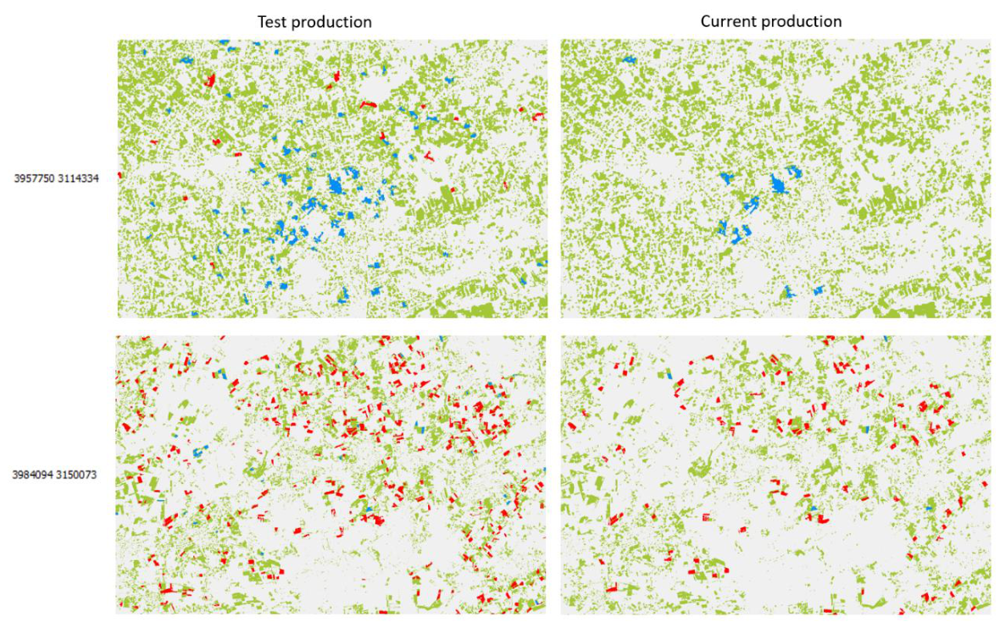
The HIS-PLOUGH from 2012 to 2015 is based on Landsat data and hence not fully consistent in terms of quality and resolution (20m) with the PLOUGH for later reference years (10m, based on Sentinel-2). This issue was already realized during the HRL 2018 production and at the time it was decided to rely on the HIS-PLOUGH for the years 2016-2018 only9. The same strategy would lead to continuously decreasing grassland extent in the 2017-2021 time series and thus, the full PLOUGH time series was hence considered to mitigate the issue. However, the variable resolution and quality of the early HIS-PLOUGH years still propagates to some degree to the Grassland (GRA) time-series (Error! Reference source not found.).
This limitation is generally difficult to be solved completely due to the unavailability of suitable Sentinel-2 time-series before 2017.
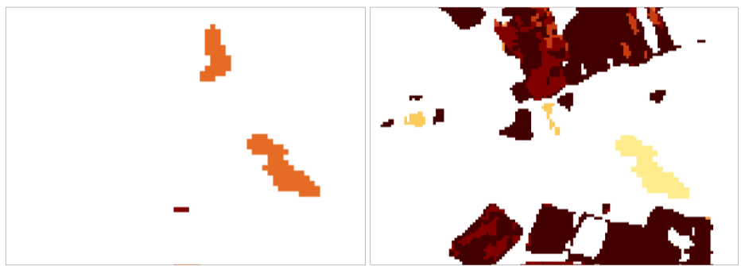
The introduction of the HER has caused inconsistency issues between the HER, GRA and the HISPLOUGH. Therefore, the HIS-PLOUGH product was adapted as the following: Class 0 - indication of ploughing in current year, former class 0 converted to class 253, class 100 will contain all pixel that change between two years due to changes in the HER but not ploughed to maintain consistency between PLOUGH, GRA and HER layers. Please refer to Error! Reference source not found. for a side-by-side view of the old and new class coding.
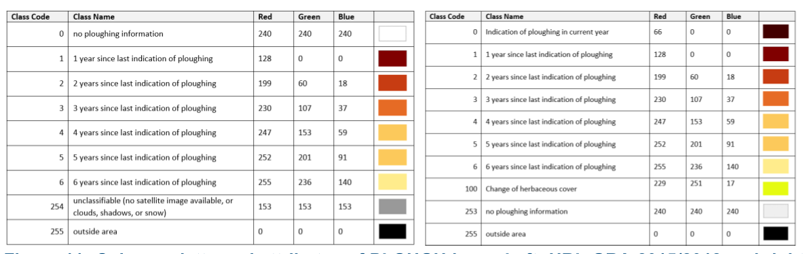
3.4 HRL Grasslands mowing layers
I this section the methods and workflows for the production of the layers, Grassland Mowing Events (GRAME), Grassland Mowing Dates (GRAMD) and the Grassland Mowing Events Confidence Layer (GRAMECL) are explained in more detail.
3.4.1 Input data
The main source of information for the Grassland Mowing (GRAM) layers are time series of high-resolution Sentinel-2 satellite data. Both processing Sentinel-2 processing levels Level-1C and Level 2A are used in the processing chain. Since undetected clouds and cloud shadows remain a significant drawback for the time-series analysis additional custom cloud masks are required. Sentinel-2 Level-1C product (providing Top-Of-Atmosphere reflectance images) serves as the primary input for the calculation of cloud masks. The Level-2A product (Bottom-OfAtmosphere reflectance as provided by WEkEO / ESA), serves as the primary input for the mowing detection via a time-series analysis. In addition to Sentinel-2 imagery, additional auxiliary data are needed:
CLMS High Resolution Vegetation Phenology and Productivity layer (HR-VPP): Startof-Season Date (SOSD) and End-of-Season Date (EOSD) (to calculate growing season parameters,
CLMS HRL Herbaceous layer (HER) mask to perform the analysis only on the detected herbaceous area.
3.4.2 Grassland Mowing Dates (GRAMD)
Based on a thorough analysis of available methodologies and experiences from CAP-based monitoring of mowing events, a methodology closely following the approach of Griffiths et al., 2020, was developed. Mowing events are determined by looking for disturbances (unusually sharp drops in biophysical signal) compared to a reference value. To determine the reference value, a reference time series model approximating the theoretical phenology of undisturbed grassland was developed. Griffiths et al. (2020) have shown that using an idealized phenological model as an upper envelope allows mowing events to be identified as deviations from the idealized model.
As opposed to Griffiths et al. (2020), who used a compositing technique to combine Sentinel-2 and Landsat 8 data into temporally equally spaced time series, we only use time series of the available cloud-free (pixelwise) Sentinel-2 images.
Another difference concerns the determination of the reference - the “idealized phenological model” - used for the calculation of the residuals, which are in turn used to detect the mowing events. Griffiths et al. (2020) developed an algorithm for selecting some points to be used to fit a third order polynomial. The result of the fit is then the reference used for the calculation of the residuals. Explorative studies conducted at the beginning of the test period yielded comparable results when selecting the points and using third order polynomials, and when simply using the entire time series and fitting second order polynomials to the data points. An adjustment to the threshold for the residuals that determine whether a mowing event has occurred was needed.
Examples of the algorithm results are shown in Figure 12 and Figure 13. The NDVI time series refer to single pixels within fields in the Sentinel-2 test tile 32TPT, for which we could obtain exact dates of the mowing events from reliable ground-truth data. Cloud and shadow masking is performed by combining Sen2Cor SCL and Cloudsen12 (Aybar et al. 2022). As demonstrated by the plots, the observations are sufficiently dense and cloud/cloud shadow masking performed well, allowing for clear detection of most mowing events. Two false negatives are seen in both Figure 12 and Figure 13.
A high-level overview of the first part of the workflow that is deployed to derive an intermediate version of the mowing dates, event counts and confidence layers is presented in Figure 14.
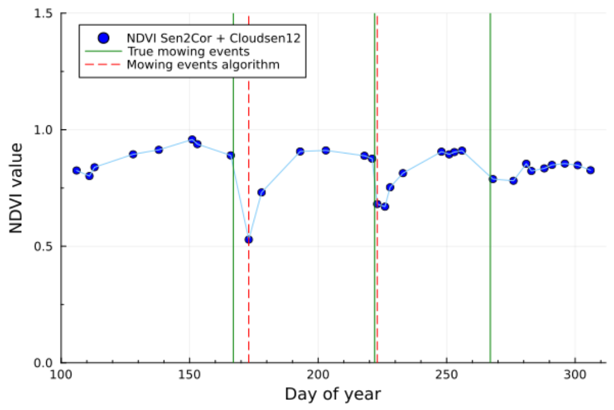
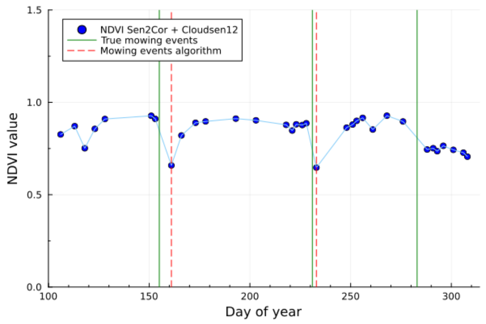
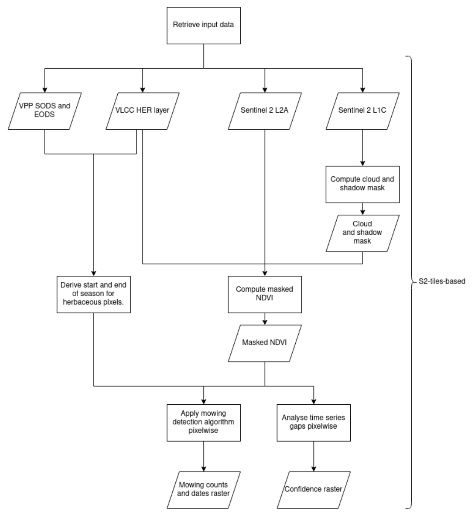
The mowing detection algorithm is season-based, meaning that a start and end of season are needed for the analysis of the time series. Extending the time window of the analysis beyond the true length of the growing season would result in a strong increase in false positive detections, while the consequence of using too short of a time window is the strong increase of false negatives (i.e., mowing events are not detected, being outside the analyzed time frame). The determination of the season length has been performed on Sentinel-2 tile basis, exploiting the HR-VPP layers (see section 3.3.1). By default, we use the 25th percentile of the start of season and the 75th percentile of the end of season of the herbaceous surfaces of the considered tile.
NDVI time-series are computed from the Sentinel-2 L2A, observations with clouds or shadows are removed, and the mowing event detection algorithm described above is applied within the determined vegetation season. The detection of mowing events is limited to a maximum of four events per season.
A high-level overview of the subsequent steps of the workflow is presented in Figure 15.
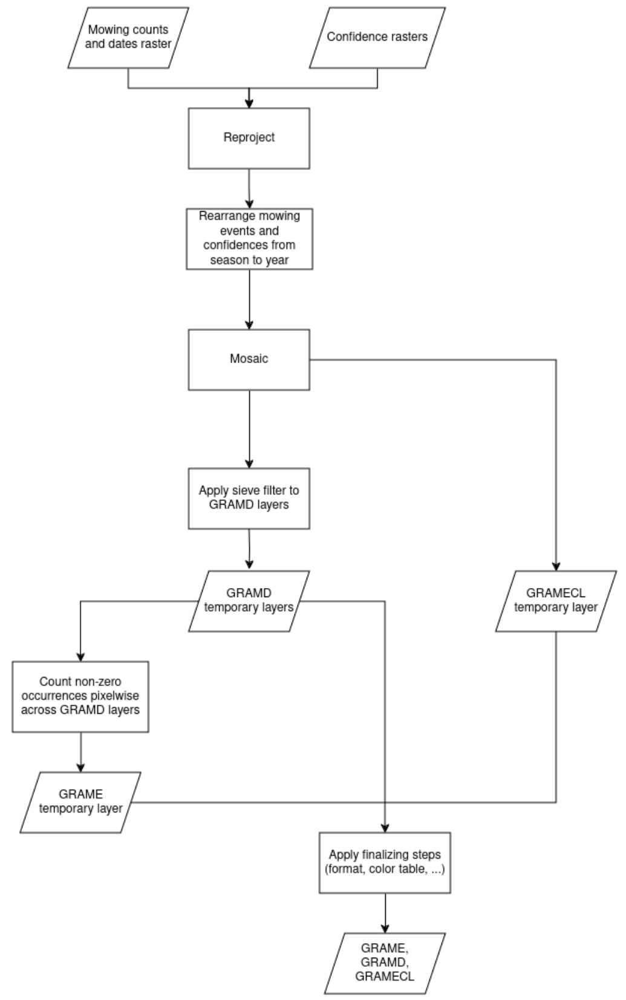
While in most tiles the start and end of season are within a single year, some climatic areas can have a start of season in the previous year, combined with an early end of season. In those cases, the final product is derived by the combination of the season-based products, keeping only the dates within the year of interest.
Following the steps described above, the GRAMD layers in Sentinel-2 tiles are mosaicked to form EEA tiles. Furthermore, GDAL sieve is applied, aiming at reducing the unavoidable noise in the resulting raster due to fluctuations in time and space of the NDVI values. The minimum mapping unit of 0.25 ha from the product specifications corresponds to 25 pixels. The sieve filter is applied to the tile product with an extra buffer of 25 pixels, to avoid border effects at the tile boundaries, and the result is finally cropped back to the EEA tile extension. For known limitations of the spatial sieving on a multi-valued date laser please refer to section 3.4.5)
Summarizing, the following steps are needed to derive the GRAMD layers:
Determination of start and end of season using HR-VPP SOSD and EOSD layers, masked with HER layers.
Computation of cloud and shadow masks for dates within the growing season period.
Computation of NDVI for dates within the growing season period, and application of cloud and shadow mask.
Application of the mowing detection algorithm on herbaceous pixels (according to HER layer);
If applicable, re-grouping of mowing events, from season to year.
Application of the MMU of 25 pixels (0.25 ha);
Finalizing steps (creation of the Cloud-Optimized-GeoTiffs, color tables, metadata).
3.4.3 Grassland Mowing Events (GRAME)
After the application of the sieve filter to the GRAMD layers, the GRAME layer is derived by counting non-zero events for each pixel.
The following steps are needed to derive the GRAME layers:
Count of non-zero occurrences in the stack of GRAMD layers (pixelwise);
Finalizing steps (creation of the Cloud-Optimized-GeoTiffs, color tables, metadata)
3.4.4 Grassland Mowing Event Confidence Layer (GRAMECL)
Long gaps in the time series reduce the capability of detecting mowing events (see also section Section 3.4.5). The confidence layer provides an indication of the likelihood of not having missed a mowing event and combines it with the individual confidence of each of the detected events.
The Grassland Mowing Event Confidence Layer (GRAMECL) gives an estimate of the confidence that the occurrence of the false negative and false positive events is minimized. All the GRAMD layers and the GRAME layer are required to derive GRAMECL. The confidence is computed as
\(\mathrm{GRAMECL} = 100 \times C_{\mathrm{FN}} \times C_{\mathrm{FP}}\)
where \(C_{FN}\) and \(C_{FP}\) are the confidences of minimizing the occurrence of the false negative and the false positive events, respectively. Both \(C_{FN}\) and \(C_{FP}\) are calculated in the range [0,1] (as detailed below), such that the final confidence is in the range \(G R A M E C L\ \in\ [0,100]\), with the highest value interpreted as the 100% probability that no true mowing event was missed and no false mowing event was incorrectly detected.
The confidence \(C_{FN}\) is concerned with gaps in the pixelwise time series. These gaps arise either from the prolonged periods of cloudiness, or due to the intrinsic gap due to the Sentinel-2 revisit time (as high as 10-15 days in certain areas), and they can be responsible for missing mowing events (false negatives). This issue is addressed, and the definition for the confidence \(C_{FN}\) is developed as follows. Supposing that a given pixel has \(N\) available points in the time series, a probability that an event was missed between any two consecutive points is defined as:
\[ p_i = \begin{cases} \frac{\Delta t_i}{\Delta t_{\mathrm{max}}}, & \Delta t_i \leq \Delta t_{\mathrm{max}} \\ 1, & \Delta t_i > \Delta t_{\mathrm{max}} \end{cases} \]
Here, \(\Delta t_i\) represents a time gap between the 𝑖-th and the \((i+1)\)-th observation in the time series, and \(\Delta t_{max}\) is a predefined tolerance window, in this case set to \(\Delta t_{max}=28\) days. If the time interval between the two observations is smaller than \(\Delta t_{max}\) according to this definition the probability that an event was missed increases linearly with the time gap \(\Delta t_i\). In case the interval between the two observations is larger than the predefined window, the probability of a missed event is assumed to be 1. The total probability that an event was missed is then obtained as a weighted average over all the time intervals \(\Delta t_i\) (for \(i=1,...,N-1\)), namely:
\[ P_{\mathrm{total}} = \sum_{i=1}^{N-1} p_i \left( \frac{\Delta t_i}{\Delta T} \right) \]
Where \(\Delta T\) is the total length of the time series (i.e., length of the growing season in days). The final confidence is obtained as \(C_{FN}=1-P_{total}\).
The confidence \(C_{FP}\) is concerned with the imperfections in the cloud masking. Namely, events such as shadows, haze or thin clouds can be missed by the masking algorithm, and they can lead to incorrectly detected mowing events (false positives). This issue is addressed, and the definition for the confidence \(C_{FP}\) is developed as follows. For a given pixel, all the mowing events detected within the GRAMD layers are iterated over. For an \(i\)-th mowing event, image filtering is applied to its corresponding cloud mask, using an identity kernel. More specifically, a custom kernel (filter) is introduced as a normalized 2D identity array of the shape \(61 × 61\), thus defining a relevant area of +/- 30 pixels (300 m) around the pixel of interest. The result of the filtering is the percentage of clear pixels in the area defined by the kernel, \(P_{clear}^{(i)}\). The values of \(P_{clear}^{(i)} < 1\) indicate the proximity of the pixel to any nearby clouds, which in turn lowers the confidence that the pixel in question is a clear pixel, free from any cloud or shadow. In addition, we compute the tile-based percentage of thin clouds detected within the Sentinel-2 tile, \(P_{thin\:clouds}^{(i)}\) (this information is straightforwardly computed from the generated Cloudsen12 cloud masks). The confidence that the \(i\)-th mowing event is not a false positive is then obtained as
\[ {c^{(i)}}_{FP} = P_{\mathrm{clear}}^{(i)} \, \Big( 1 - P_{\mathrm{thin\ clouds}}^{(i)} \Big) \]
The final confidence follows as the product over all single-day confidences, \(C_{FP} = \prod_{i=1}^{N_{\mathrm{events}}} c^{(i)}{}_{FP}\)
3.4.5 Encountered issues and known limitations
During the implementation and production of the GRAM layers some issues have been identified. These can be divided into several subgroups:
MMU-related
The requirement of a Minimum Mapping Unit for the GRAMD layers, albeit resulting in more uniform results, also yields some issues resulting from the need to apply a spatial filtering on complex layers presenting dates and counts.
The HER layer used for determining the areas where to apply the mowing detection algorithm does not have an MMU. It is therefore not possible to satisfy both the mapping of mowing events for all herbaceous pixels and the MMU of 0.25 ha of the GRAMD. As a result, the GRAMD still contains patches below the MMU in particular in small HER patches.
The GDAL sieve10 filter needs to be applied independently to each of the four GRAMD layers. This filter ensures that patches of DOY-values smaller than the threshold of 0.25 ha (25 pixels) are replaced by the value of the largest neighboring patch, but only if the size of the neighboring patch is larger than the threshold. Since this filtering is applied individually to each GRAMD layer (GRAMD_1, GRAMD_2, …), in some cases, the newly assigned value is already present in one of the other mowing event date layers at the same location (i.e. the same pixels). In such cases, it results in date duplication, where timing of the first mowing event (GRAMD_1) and the second mowing event (GRAMD_2) share the same DOY. This occurs in approximately 0.4 % of the herbaceous pixels.
The independent filtering of the GRAMD layers explained in the previous point can also result in a fictitious increase in the mowing count of the GRAME layer. Furthermore, the MMU requirement cannot be guaranteed in the resulting GRAME layer, because the MMU-compliant patches in the single GRAMD layers could overlap in an “unfavorable” manner. On the other hand, not re-counting the events after sieving or applying a second filter on the GRAME would result in strong inconsistencies across the different layers.
Verification and quality control
A quality assessment of the GRAM layer is very challenging due to lack of reliable and representative ground-truth data across Europe.
Related EO input data
Cloud cover can strongly reduce availability of usable data. This issue is dependent on the region, with an example of average cloudiness shown in Figure 16 (a). Sentinel-2 observation pattern and the associated swath borders lead to differences in the data availability in different regions, with some regions experiencing an average gap as high as 10-15 days (in combination with cloud coverage). The Sentinel-2 observation gaps are shown in Figure 16 (b). These gaps can result in noticeable border issues/data stripes in the GRAME product (see Figure 17).
In some case the atmospheric correction of the L2A also seems to be a cause of false positive mowing detection. Further investigations in this regard will be needed.
Cross-year season
For some tiles with an early start of the vegetation period, the mowing season associated with a reference year may begin in the previous calendar year. Likewise, the subsequent season, which for the next year, may already start within a given reference year. Since the production of the VLCC products (incl. the GRAM) has been conducted in several phases (2017-2021, 2022-2023, 2024) this can result in incomplete detection of mowing events for the final year in the production interval, as data from the following season is not yet processed. To ensure consistency and completeness, it may be necessary to include an additional year of data for tiles with early season starts and for the final year of the production interval.
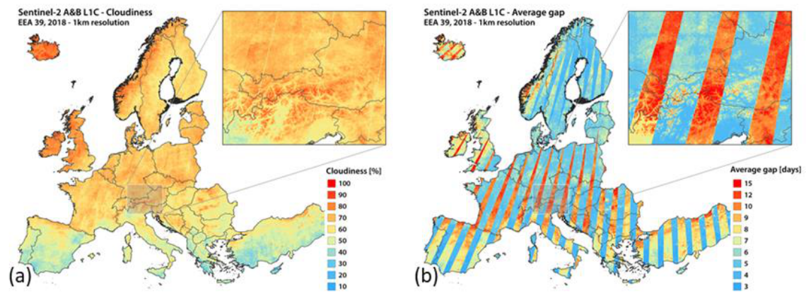
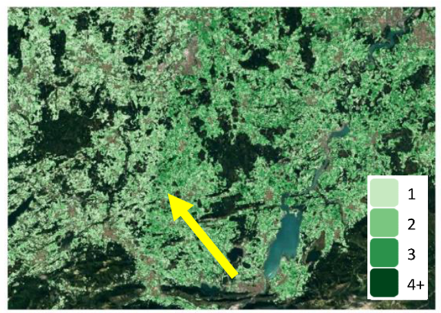
3.5 HRL Crop Type
This section gives an overview of the methodology employed to produce the layers Crop Type (CTY) and the Crop Type Confidence Layer (CTYCL).
3.5.1 Input data
Before the pixel-based inputs are fed to the model, minimal pre-processing is applied to transform the raw inputs to a consistent format. Optical Sentinel-2 data is first cloud-masked based on the official L2A scene classification value to which an erosion-dilation process is applied to enhance the cloud/shadow mask. Next, a 10-day compositing window is applied where the median operator is used if multiple observations are available. Finally, any remaining missing values are linearly interpolated to prevent gaps in the input data, as the presence of ‘no data’ values can lead to model instability. The 20m optical bands are resampled to 10m resolution by applying a nearest neighbour interpolation.
Sentinel-1 backscatter is derived from Level-1 GRD (Ground Range Detected) products, which have been pre-processed to correct for geometric distortions. To obtain meaningful surface backscatter values, sigma nought backscatter is calculated from these GRD products using the ellipsoidal Earth model. For enhanced accuracy, the Copernicus 30 m Digital Elevation Model (DEM) is also applied to support radiometric correction, compensating for terrain effects and ensuring consistent backscatter values across varying landscapes. By default, only one orbit direction (Descending) is kept, as the model is designed to handle a single Sentinel-1 orbit pass. Combining ascending and descending orbits could mix signals acquired under different viewing geometries, potentially leading to a loss of relevant information. Additionally, using both orbits would significantly increase processing costs without a clear benefit for model performance. The available observations are composited with the 10-day windows where multiple acquisitions are averaged. Any rare missing values are linearly interpolated. Finally, the backscatter intensity values are converted to decibel values. If there is insufficient Descending data (data gaps > 10 days, especially happened over northern Europe) also Ascending data is used.
The Copernicus 30m DEM is used to derive altitude and slope at the pixel level, for which resampling to the Sentinel-2 10m grid is performed. Finally, the daily mean temperature variable is extracted from the original AgERA5 meteorological data, aggregated into 10-day intervals, and resampled to the Sentinel-2 10 m grid.
3.5.2 Classification algorithm and inference
The classification algorithm consists of a transformer-based feature extractor followed by a downstream crop classification head (Vaswani et al., 2017; Zerveas et al., 2021) (Figure 18). These two parts are coupled into one model which is trained end-to-end based on the available training data. Input to the model are the aligned inputs from the source-specific preprocessing steps. Time series from optical Sentinel-2 bands (“B02”, “B03”, “B04”, “B05”, “B06”, “B07”, “B08”, “B11”, “B12”) and radar Sentinel-1 backscatter (VH and VV) are jointly fed into a transformer-based encoder, which is designed to automatically extract the most relevant features for crop type classification. To better align similar inputs from different regions in Europe, the encoder model simultaneously has access to the temperature time series data in order to better differentiate the observed satellite time series across varying meteorological conditions. The transformer architecture contains an attention mechanism that learns to extract relevant information within and across the different input data streams. The original optical Sentinel-2 bands, radar Sentinel1 backscatter intensities, and meteorological time series are directly fed into the transformer encoder for automated feature extraction. Inputs that lack a temporal dimension are fed as scalars to a dense encoder for simple feature extraction. The output of the feature extractor (encoder) part represents a highly condensed and informative representation of the inputs and because the model is trained in a fully-supervised manner, the extracted features are already finetuned towards a crop classification task. Traditional manual feature engineering is hence not needed in this setup.
Once the features (embeddings) have been extracted, explicit fusion of the different inputs happens by concatenating these features before feeding them to a multi-layer perceptron classification head consisting of several stacked dense layers. Final output of the classification head is a probability of an input belonging to a crop type label, with probabilities of all labels summing to one. Final classification is performed by assigning to each 10m pixel from the 19 crop type classes the label that has the highest probability.
The model was trained on an extensive in-situ dataset of almost one million samples compiled from LPIS-GSA, LUCAS datasets and active learning sampling (Table 3) (Eurostat, 2018). The original LPIS-GSA and LUCAS datasets have each been fully harmonised towards a common crop type nomenclature (available for download, here). The harmonized version of each dataset, along with the harmonization procedure and the translation of original crop type labels to harmonized labels, have all been published on the WorldCereal Reference Data Module (RDM) and are available for anyone to use. More general information about this harmonization procedure and on how to navigate the WorldCereal RDM application, is available on the WorldCereal documentation portal. In a next step, each individual dataset has been subsampled to derive a representative training dataset at European scale, avoiding as much as possible spatial and temporal bias and ensuring a label-balanced training dataset. This subsampling was done in an iterative way for each dataset separately:
A fully random sample was drawn across all crop types available in the dataset. The initial sample size was chosen dynamically per dataset depending on the dataset’s spatial extent and the number of years available for the region. This first random step ensured the most dominant crop types for the region were sufficiently represented. Only grassland was ignored during this initial stage, to avoid massive bias towards this dominant land cover class.
On top of the initial random sampling stage, we identified a number of “focus crops” for which we ensured a minimum number of samples taken from the dataset. Focus crops were defined as the target crops to be included in the eventual pan-European crop type maps. In case of cereals, the most dominant cereal types (wheat, barley, rye, oats, triticale) were sampled separately. Again, the minimum number of crop-specific samples were defined dynamically per dataset, depending on its spatial and temporal extent.
Depending on early model iterations and testing, additional samples for targeted crop types in targeted regions were dynamically added to the training dataset. This for instance included additional wheat and barley data in Southern Europe.
Finally, all training data was merged into a final representative training dataset, which was used to train a single model that generalizes well across all regions and can be reused for crop classification on a yearly basis.
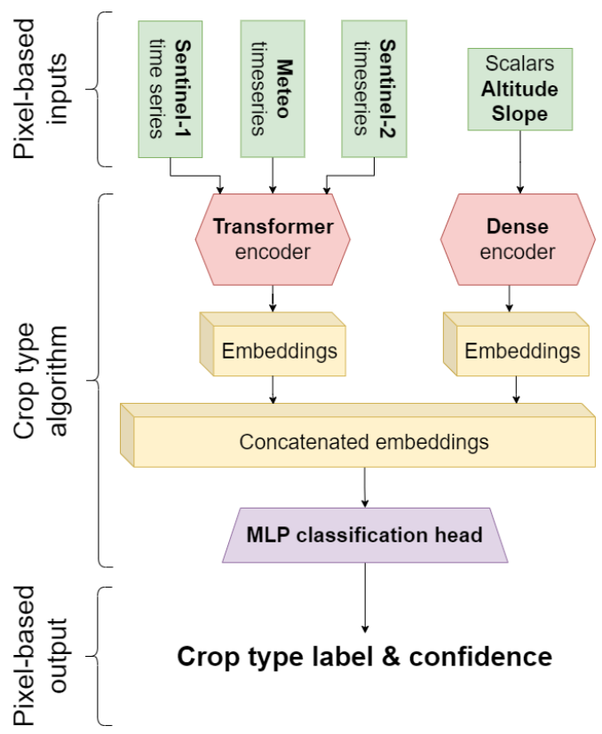
Table 3: Overview of the used training points per dataset and year for the CTY model training
| Country/Region | Years | Number training points |
|---|---|---|
| Austria (LPIS/GSA) | 2018, 2019, 2020 | 160 174 |
| Germany (LPIS/GSA) | 2021 | 77031 |
| Denmark (LPIS/GSA) | 2019 | 39596 |
| Estonia (LPIS/GSA) | 2021 | 16874 |
| Spain (LPIS/GSA) | 2019, 2020, 2021 | 133 830 |
| Finland (LPIS/GSA) | 2021 | 28138 |
| Belgium (LPIS/GSA) | 2018, 2019, 2020, 2021 | 52938 |
| France (LPIS/GSA) | 2019, 2020 | 108 158 |
| Croatia (LPIS/GSA) | 2020 | 12111 |
| Lithuania (LPIS/GSA) | 2021 | 26243 |
| Latvia (LPIS/GSA) | 2021 | 42226 |
| Sweden (LPIS/GSA) | 2021 | 36374 |
| Slovakia (LPIS/GSA) | 2021 | 46609 |
| Europe (LUCAS) | 2018 | 26294 |
| Europe (Active learning) | 2019, 2020, 2021 | 17196 |
The trained model is deployed as part of an OpenEO11 workflow that covers in an end-to-end way the cloud-based access to the required algorithm inputs, preprocessing steps as described above, model inference, and writing of the output product. Parallelisation is done automatically after tuning the necessary parameters such as the height and width of individual processing windows. The CTY processing is based on 20km LAEA sub-tiles of the original LAEA 100km grid.
3.5.3 Post-processing
In the postprocessing pipeline (Figure 19 & Figure 20), each 20km LAEA sub-tile is postprocessed independently, except for the temporal rule-based postprocessing and the tile padding for GDAL Sieve steps. First, the cropland layer derived from BVL (classes ‘Annual arable cropland and perennial (permanent) crops’, ‘Tree crops’ and ‘Overlap herbaceous–Tree cover’) is applied as a basic mask, setting non-cropland pixels as well as out of scope zones. In that step, a correction is also performed for pixels which are classified as grass and fodder by the crop type model but for which the BVL considers them as permanent crops. In that case, the pixels crop types are changed to the permanent crop class with the highest probability. Then, remaining cropland pixels are reclassified by performing spatial smoothing with a gaussian kernel (3x3) on every perclass probability and re-assign the pixel’s class from the new highest probability. This allows to improve class consistency within fields, as the crop type classifier is pixel-based. The result of this process gives the intermediate crop type with grass/fodder crops included that is transferred to the herbaceous layer. The grass/fodder crops locations are removed from the crop type product for the next steps.
Afterwards, an interannual consistency correction is applied on the full time series (2017-2021). Products on the same location but for different years are concatenated together before running the correction. The following three cases are covered:
When a sequence of crop types consists of only permanent crops, except for one year (that is not in the edges) then corrects that sequence to the permanent crop class that has the maximum accumulated probability over the sequence. Cases from the edge years are excluded as they may indicate transitions between arable and permanent crop states. Thus, sufficient data is lacking to make reliable assumptions.
When a full sequence (including edge years) of permanent crops does not have the same crop type, then sets that sequence with the permanent class that has the maximum accumulated probability over the sequence. This operation helps by having a more consistent prediction in permanent crop cases.
When a pixel of permanent crop class is in-between two arable years, which could correspond to (temporarily) fallow conditions, this pixel is set to the background class (0). For the same reasons as described in the first point, the edge years are not modified by this operation.
Grass and fodder classes are ignored in interannual consistency corrections and are treated as the background class. In addition, pixels that do not correspond to cropland for all the years of the analysis are ignored, as again the information is insufficient to make assumptions.
Thereafter, pixels where the maximum probability of all predicted classes is below 25% are set either to unclassified arable cropland or undecided permanent crop, dependent to which category the class with the highest probability belongs.
Isolated pixels and small fields are finally cleaned using the GDAL Sieve operation with a MMU of 0.25 ha and connectivity 4. In addition to obtain more consistent land cover maps, this operation also ensures a minimum mapping unit of 0.25ha for each field. To avoid artefacts at the boundaries between tiles, a padding must be added to each sub-tile before running the spatial cleaning. Once the padding is performed, the GDAL Sieve operation replaces every field with an area below the threshold of 0.25ha by changing the class to the class of the neighbour field with the largest area, including the background class (0) in the calculation to remove small, isolated fields. Pixels that were excluded by previous operations remain excluded after GDAL Sieve.
Finally, 20km sub-tiles are combined in larger tiles to obtain the final 100km crop-type and probability products.
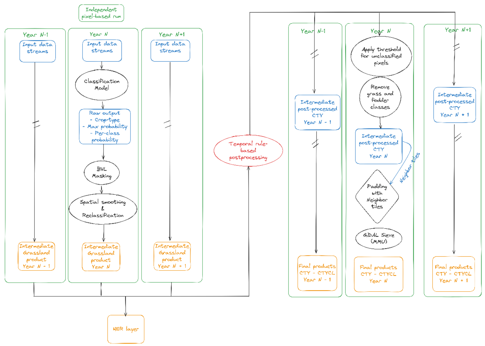
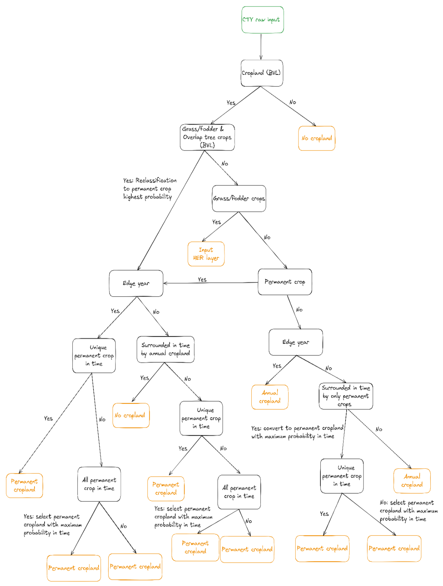
3.5.4 Crop Type Confidence Layer
The Crop Type Confidence Layer (CTYCL) provides a per-pixel estimate of the classification confidence by reporting the final probability associated with the selected crop type label at 10-meter resolution. This probability originates from the crop type classification model output, where each crop class is assigned a confidence value. However, the final probability values may be modified during the crop type postprocessing chain, which ensures spatial and temporal consistency. Specifically, the following chronological steps can influence the confidence values:
Spatial smoothing: A 3×3 Gaussian filter is applied to the per-class probability output, enhancing spatial coherence across neighbouring pixels. Pixel classes are re-assigned based on the updated highest probability, which may differ from the original model output.
Interannual consistency correction (see also above): When a permanent crop is missing (excluding edge years) in a single year of an otherwise consistent time series, or when the sequence includes different permanent crop types, the final crop type class will be adjusted. In these cases, the pixel’s confidence value is recalculated as the average probability of the selected permanent crop class across the time series.
GDAL Sieve operation: To remove small, isolated patches, pixel values are reassigned based on the dominant neighbouring class. If a pixel’s class is changed during this step, its probability is updated to reflect the confidence of the newly assigned class.
Pixels that are reassigned to the background class during postprocessing steps are assigned the “no cropland” confidence value of 253.
3.5.5 Encountered issues and know limitations
During the quality assurance process, minor violations of the minimum mapping unit (MMU) requirement were detected in non-cropland areas of the crop type layer (2017-2021).Specifically, the issue arose due to the GDAL Sieve operation being applied in a single pass. While a single pass may suffice for layers with a limited number of classes, it is not adequate when more than four distinct classes are present. In such cases, multiple sieving iterations are necessary to fully enforce the MMU constraint.
Although the original implementation included checks to address this limitation, non-cropland pixels were unintentional excluded from these checks. As a result, small patches of non-cropland remained below the MMU threshold. The overall impact of this issue is minimal, affecting approximately 0.0002% of the total crop type pixels.
Despite the application of postprocessing steps aimed at improving consistency, some implausible crop type sequences remain in the final crop type product (2017-2021). These arise from the inherent trade-off between enforcing temporal and spatial consistency. Interannual consistency checks promote temporal stability across years, while spatial consistency is enhanced using the GDAL Sieve operation. However, strictly enforcing both constraints would result in overly homogeneous patches, undermining the high-resolution detail offered by the 10-meter product.
This challenge is particularly pronounced in heterogeneous and complex landscapes such as those found in southern Europe, including agroforestry systems like Dehesa. In such regions, mixed sequences of permanent and annual crops may still appear, even if they are agronomically unlikely.
Additionally, the presence of the no-cropland class (label 0) within a sequence can be explained by various factors. These include the removal of grass/fodder pixels during postprocessing, reclassification through interannual consistency checks, or changes introduced by the GDAL Sieve operation. Such instances result in discontinuities within the crop type sequences.
Finally, the limited five-year time span of the dataset may not be sufficient to fully identify and correct all implausible sequences. Future observations beyond this period could help to better identify consistent crop type sequences and further reduce inconsistencies.
3.6 HRL Cropping Pattern
This section gives an overview of the methodology employed to produce the Cropping Patterns (CP) layers which includes a comprehensive of layers that provide details on the timing and extent of agricultural practices along five thematic groups being Main crops, Bare soil, Secondary crops, Fallow land and Cropping Seasons.
3.6.1 Input data
The HRL Cropping Patterns (CP) layers entail a wide set of layers relying on both Sentinel-2 optical and Sentinel-1 SAR-based satellite data. The HRL CTY layer is used to define the focus locations of the CP layers generation.
Sentinel-2 and Sentinel-1 backscatter data are pre-processed in a similar way as for the CTY layer, with some minor differences. In case of Sentinel-2 only a subset of relevant bands is retained, including band 2,3,4,8, 11 and the incident angles information. The latter is needed to derive fraction of Absorbed Photosynthetic Active Radiation (fAPAR) at 10m.
For the Sentinel-1 backscatter both the ascending and descending orbits information are combined to ensure maximum data availability required for detecting abrupt events like field harvest. Extraction of the data is done at field level, resulting in timeseries per field. Field boundaries are defined using a delineation algorithm.
3.6.2 Product structure
The CP portfolio compromises a diverse range of layers, derived from field level seasonal information. The methodology used to obtain field level seasonal information and derived cropping pattern layers is shown in Figure 21. In a first step, the locations for which CP layers are derived are filtered, i.e., only fields that are delineated and are dominantly covered by an annual crop are retained. The field delineations are obtained by using a 3D Res-UNet field delineation algorithm which uses Sentinel-2 images. Only fields above the MMU of 0.25 ha and which are classified as an annual crop by the CTY layer are retained. For this subset of delineated fields, Sentinel-1, and Sentinel-2 timeseries are retrieved, which are necessary inputs for the harvest and emergence detection. The detected harvest and emergence events are used to derive a maximum of two growing seasons per year based on expert rules. The workflow results in several CP layers, which are subdivided into 5 thematic themes:
Main crops
Bare soil
Secondary crops
Fallow land
Cropping Seasons
All vector-based CP layers are rasterized to 10 m spatial resolution to align with HRL CTY layer. Although the original CP layers are derived exclusively from delineated parcels larger than the defined MMU of 0.25 ha, a final spatial alignment with the HRL CTY layer is required to ensure consistency across product layers. This alignment step involves clipping the field-based CP outputs to the CTY-classified (pixel-based) annual cropland extent. As a result, some CP outputs—originally MMU-compliant—may appear as smaller spatial fragments due to partial overlap at field boundaries. While this may produce local patterns below the MMU threshold, these are a by-product of spatial alignment rather than the initial CP derivation. Reapplying a sieving operation at this stage to enforce the MMU would risk removing valid and relevant CP information, particularly in transitional or fragmented agricultural landscapes. Moreover, the clipping step alone already leads to some loss of CP content, and further filtering would compound this loss.
In the following sections, the methods used to delineate growing season(s) and derive the corresponding CP layers are described.
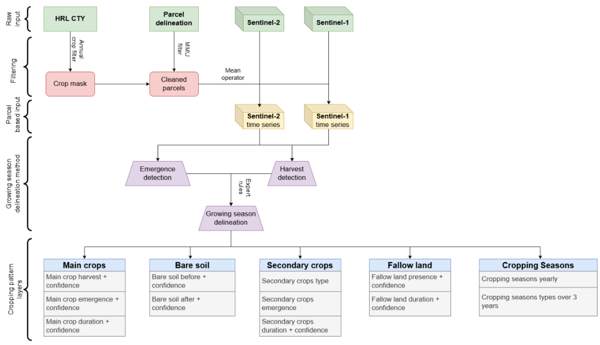
3.6.3 Growing season delineation
The growing season delineation at field level forms the basis for the CP layers generation. The methodology used to determine the growing season delineation is shown in Figure 22. The onset and end of the season is based on the detected emergence and harvest events (see sections below), respectively. The detected emergence and harvest events are used in expert rules to determine the growing seasons (see sections below).
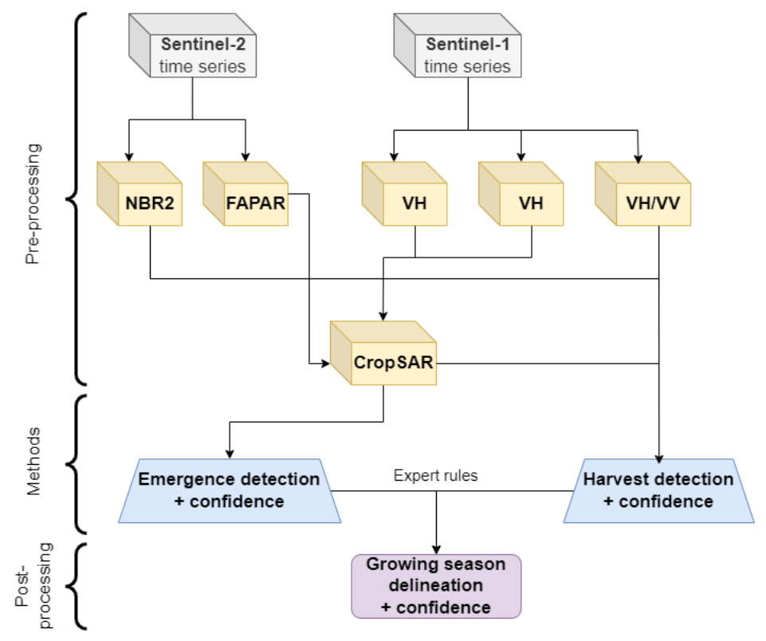
3.6.3.1 Emergence detection
The inflection behavior of the spectral signal around the moment of emergence is used to detect emergence events. As spectral signal, daily fAPAR values obtained from the CropSAR technology are used. CropSAR is a deep learning method that allows to fill-in the cloud gaps in fAPAR timeseries using the relationship between Sentinel-2 fAPAR and Sentinel-1 backscatter data (CropSAR, 2024; Piccard et al., 2023). Optical fAPAR data were preferred to Sentinel-1 derived features since fAPAR is not influenced by soil structure and moisture content around emergence (Khabbazan et al, 2019). Additionally, the change of fAPAR around the emergence period is quite gradual. A rule-based approach was used to determine emergence events as deep learning methods depend on a substantial amount of training which were not available.
Field data on emergence dates (+- 200) of agricultural fields, located mainly in Belgium, were used to investigate the behavior of the fAPAR signal around emergence. From this, generalizable rules and threshold could be defined to allow a robust and consistent emergence detection as shown on Figure 23. The values of the parameters are obtained by applying a Monte Carlo simulation. Emergence is detected shortly after the occurrence of a slope inflection of the CropSAR timeseries (Figure 23), this is also confirmed in literature (Gao et al., 2017; Gao et al., 2021). Some additional parameters are used to check if the slope inflection is related with a clear seasonal signal (i.e., amplitude, duration until season peak, …). Within the literature it is also clearly confirmed that emergence typically occur after an inflection of the time series from optical derived data (Gao et al., 2017; Gao et al., 2021). The detected emergence date corresponds with the unfolding of the first leaves of the crop on the field.
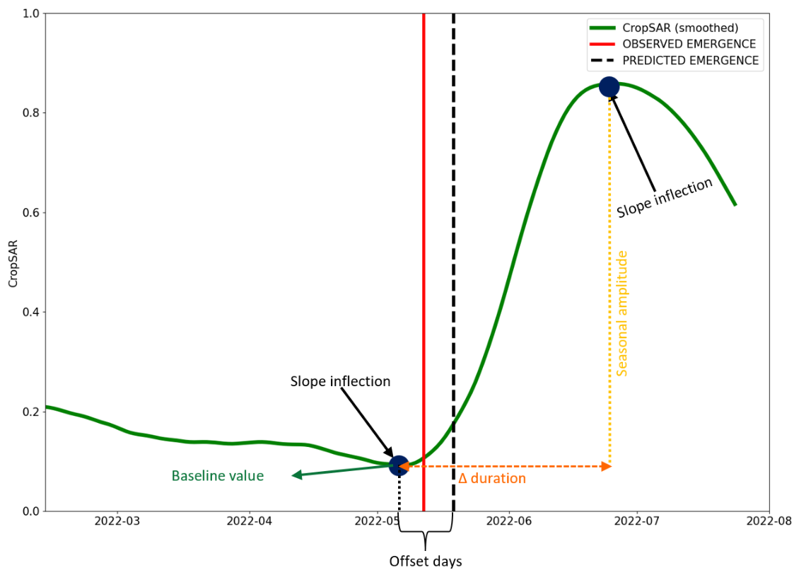
3.6.3.2 Harvest detection
Harvest is defined as the moment of total removal of standing biomass from the field. For the harvest detection, a sequential neural network is trained to identify a harvest event out of set of selected satellite derived features. 600 fields with information on harvest date (both on the main season and for some on the secondary season) are used for model training. Most of these fields are in Belgium, Italy, Greece, and Austria and cover a wide range of the most common cultivated crops. The model is trained such that a detection of a harvest event aligns with the agreed definition on harvest. The following spectral features are used in the harvest detection algorithm:
fAPAR (CropSAR)
Sentinel-2 Normalized Burnt Ratio 2 (NBR2) (Alcaras et al., 2022)
VH/VV in decibels derived from Sentinel-1 backscatter.
The selected features complement each other. The VH/VV ratio does respond more to the structural changes of the field at harvest, while the other two features do react more on the biophysical change (Meroni et al., 2021; Van Tricht et al., 2018). The NBR2 is added as it is particularly sensitive for harvest at low fAPAR values. This typically occurs in cover crops or maize that are in a far stage of senescence at harvest. In such case, the fAPAR signal is not enough to properly detect a harvest event and the signal received from VH/VV is not that clear anymore due to the collapse (loss of structure) of the crop. All the different features are brought on a 6-daily temporal scale, in case of the NBR2 a Whittaker smoother has been applied to fill-in the cloud induced gaps. Gaps in Sentinel-1 VH/VV are linearly interpolated. The 6-daily time series of CropSAR, NBR2 and VH/VV are used in the harvest detection sequential neural network model.
3.6.3.3 Season delineation
For the season delineation, all the emergence and harvest events in a period of 6 months before and after the reference year of interest are retained. This six-month period is added to also be able to detect seasonalities that do not fall within the year boundaries (e.g., secondary crops and winter cereals). In the first step, the emergence and harvest detections are cleaned and associated with a single seasonality to categorize it as either a main or secondary season. A series of expert rules, derived from an examination of seasonal boundaries at the European level in conjunction with United States Department of Agriculture (USDA) crop calendar data, are used for labeling the seasons (see Table 4). These rules are fully independent from the CTY crop labels to avoid error propagation. For both main and secondary crops, some further sub-seasonality labelling is done to differentiate between winter & spring crops and secondary crops growing before or after the main growing season of that reference year. Each of these sub-seasonality categories have different periods in which they can occur (Table 4). The sub-seasonality categorization can further assist in prioritizing the final selection of the labelled seasons as main or secondary season if multiple seasons conflict within one of these categories.
Additionally, also regional dependent seasonal bounds are defined due to different growing season periods within Europe. Therefore, Europe has been divided into two zones based on the Metzger environmental zones, which is based on variations in climatic conditions across the continent, for seasonal labeling (Metzger et al. 2018). The translation of the original environmental zones into the two zones is shown in Table 5. The subdivision is mainly dividing more temperate/cold climates from warm/Mediterranean climates within the European continent. In the latter, onset of the main growing season is substantially earlier compared to the colder climates where temperature delays the season onset.
The expert rules for season labelling are described below:
Emergence and harvest are chronologically linked together into a season.
A season that ends before the start of the reference year or starts after the end of that year, is removed.
Seasons with a length below 40 days or above 365 days are removed.
The remaining seasons are labelled into one of the following options (based on the defined limits in Table 4):
Spring crop
Winter crop
Secondary crop before the main season
Secondary crop after the main season
No labelling possible (if it does not fit to one of the above categories)
If a season falls in the seasonal limits of two types of sub-seasons, the following labelling priority is given:
Overlap between winter and spring crop season:
Days overlap season in spring crop season period > days overlap in winter season period → spring crop.
Days overlap season in spring crop season period = days overlap in winter season period → spring crop.
Days overlap season in spring crop season period < days overlap in winter season period → winter crop.
Overlap between spring crop and secondary crop after main season → spring crop.
Eventually, the final seasons used for generating the layers on main and secondary crops are defined as follows if there is a conflict (multiple occurrences) in one of these categories:
Main season:
- Spring crop season > winter crop season
- Spring crop season > winter crop season
Secondary cover crop season:
- After the main season > before the main season
- After the main season > before the main season
If no main season is detected for a specific field in a certain reference year also no secondary crop season information is provided.
Table 4: Expert rules with seasonal limits for season delineation based on emergence and harvest input.
| Type season | Zone | Sub-seasonality | Emergence period | Harvest period |
|---|---|---|---|---|
| Main season | 1 | Winter crop | 15/08(year-1)→ 30/04(()) | 01/(06_{()}) → 15 (;/09_{(r)}) |
| Main season | 1 | Spring crop | (01/04_{(}/07_{(}) | (01/07_{()}/1)(1/12_{(}) |
| Main season | 2 | Winter crop | 15 (/08_{()}/03_{(}) | (01/04_{(}/08_{(}) |
| Main season | 2 | Spring crop | 01/(03_{()}/07_{()}) | (01/06_{(}-)()/01((1)) |
| Secondary season | 1 | Before main season | 01/01 (.()))→ (30/04_{()})) | 01/01 (.()))→ (30/04_{()})) |
| Secondary season | 1 | After main season | 1 (.5.)/0 (7_{()}))→ (30/04_{(})) | 1 (.5.)/0 (7_{()}))→ (30/04_{(})) |
| Secondary season | 2 | Before main season | (01/01_{()})(/03_{(y e a r)}) | (01/01_{()})(/03_{(y e a r)}) |
| Secondary season | 2 | After main season | 1 (5/06_{()}/03_{(+1)}) | 1 (5/06_{()}/03_{(+1)}) |
Table 5: Translation of Metzger environmental zones into a zone used with the same season delineation limits.
| Environmental zone (Metzger) | Zone |
|---|---|
| Alpine north | 1 |
| Boreal | 1 |
| Nemoral | 1 |
| Atlantic north | 1 |
| Atlantic south | 1 |
| Continental | 1 |
| Atlantic central | 1 |
| Pannonian | 2 |
| Lusitanian | 2 |
| Anatolian | 2 |
| Mediterranean mountains | 2 |
| Mediterranean north | 2 |
| Mediterranean south | 2 |
| Macaronesia | 2 |
| Arctic | 1 |
3.6.4 Confidence layers
For most of the CP layers confidence information is provided and is based on the uncertainty of the emergence and harvest detection used to delineate the growing season(s). This confidence is calculated based on the uncertainty of satellite observations at the date of emergence or harvest. The CropSAR technology used to fill-in cloud induced gaps of fAPAR provides this uncertainty interval of fAPAR at these dates, as the (10^{}) (q10) and 90th (q90) percentile. The emergence and harvest detection algorithm use the q50 values for their predictions. The emergence or harvest uncertainty in days is based on the upper (q90) and lower (q10) confidence of fAPAR at the event (i.e., emergence or harvest) date and the slope of fAPAR at event date (denoted as slope \(fAPAR_{event q50}\)) (see equation and Figure 24 below):
\[ fAPAR_{\mathrm{uncertainty}\;q10} = fAPAR_{\mathrm{event}\;q50} - fAPAR_{\mathrm{event}\;q10} \]
\[ fAPAR_{\mathrm{uncertainty}\;q90} = fAPAR_{\mathrm{event}\;q50} - fAPAR_{\mathrm{event}\;q90} \]
\[ days\;uncertainty_{\mathrm{event}} = \mathrm{abs}\!\left(\frac{fAPAR_{\mathrm{uncertainty}\;q10}} {slope\;fAPAR_{\mathrm{event}\;q50}}\right) + \mathrm{abs}\!\left(\frac{fAPAR_{\mathrm{uncertainty}\;q90}} {slope\;fAPAR_{\mathrm{event}\;q50}}\right) \]
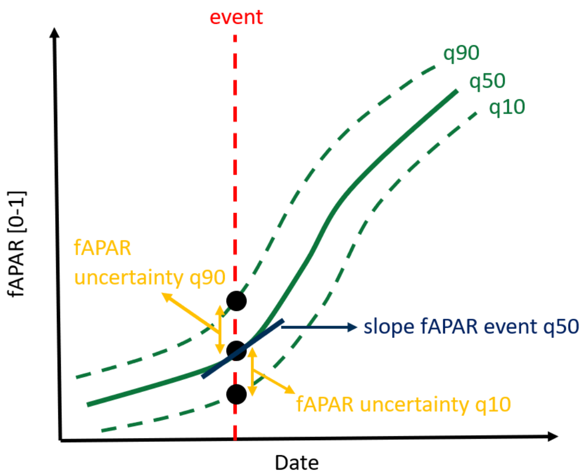
In rare cases, this approach does not yield reliable results, for example when the slope around emergence or harvest is nearly zero. In these cases, the uncertainty is calculated as follows.
In case of emergence, the uncertainty is the number of days after the event to reach the q50 fAPAR value at emergence by the q10 time series. For harvest, the uncertainty in days can be estimated by the number of days before the harvest event that the q10 time series reach the q50 fAPAR value at harvest.
In case of emergence, the uncertainty in days can be estimated by the number of days before the emergence event that the q90 time series reach the q50 fAPAR value at emergence. For harvest, the uncertainty is the number of days after the event to reach the q50 fAPAR value at harvest by the q90 time series.
The total uncertainty is then determined by summing up the number of days determined in (1) and (2).
Note that, during cloudy periods, the confidence interval will increase as the uncertainty on the fAPAR will also increase.
For most CP layers the uncertainties correspond to the uncertainties that are derived from the emergence and harvest date of the specific season. And exception is the Fallow Land Presence Confidence Layer (CPFLPCL) which is based on the Crop Type Confidence Layer (CTYCL) (which is by default below 35 for fallow fields) and set to:
\[ \mathrm{CPFLPCL} = \frac{CTYCL - 10}{35 - 10} \cdot 100 \]
The lower the CTYCL of a fallow field the higher the CPFLPCL. In case the CTYCL is below 10, the confidence for fallow land presence is confined at 100.
The Fallow Land Duration Confidence Layer (FLDCL) can only be calculated when a harvest date is utilized to determine the start or end of a fallow land period. The uncertainty on the harvest date is used to provide information on the fallow land duration confidence. If there is no harvest event on the fallow field, a flag is assigned to the layer. Like for the FLDCL layer, the sum of the uncertainties (whenever present) is taken over the five-year period to determine the corresponding uncertainty.
3.6.5 Derivation of Main Crops, Bare Soil, Secondary Crops, Fallow Land and Cropping Seasons layers
Based on the delineation of the growing season and the uncertainty of the fAPAR the raster layers for the five layer groups Main Crops, Bare Soil, Secondary Crops, Fallow Land and Cropping Seasons can be derived. This section provides further details on how this has been implemented.
3.6.5.1 Main Crops
For all fields that do have a delineated main season and are not designated as fallow land (see section 3.6.5.4), the following layers based on the main seasonality are derived:
Main Crop Harvest (MCH) + Confidence Layer (MCHCL)
Main Crop Emergence (MCE) + Confidence Layer (MCECL)
Main Crop Duration (MCD) + Confidence Layer (MCDCL)
The first two layers are directly derived from the emergence and harvest information of the delineated season. The confidence is derived from the uncertainty on the emergence or harvest date. The Main Crop Duration is the difference in days between the emergence and harvest of the season. The confidence of the crop duration is the average of the confidence on the emergence and harvest date.
3.6.5.2 Bare soil
The Bare Soil (BS) layers define the number of days that a field is left bare before and after the main season. If no main season is detected for a specific field or the if the field is designated as fallow land (see section 3.6.5.4) no bare soil information is provided). The following two bare soil layers are produced:
Bare Soil Before main season (BSB) + Confidence Layer (BSBCL)
Bare Soil After main season (BSA) + Confidence Layer (BSACL)
The duration of the bare soil period following the main season is determined by calculating the number of days between the harvest of the main season and the subsequent emergence date. If there is no emergence date within the same reference year as the product, the bare soil period ends on the last day of the year. If the main season ends after the end of the reference year, no bare soil period after the main season is provided. Conversely, for the bare soil period preceding the main season, the days between the last harvest date prior to the main season and the emergence date are determined. If there is no preceding harvest date in the reference year, the bare soil period begins on the first day of the year. If the main season commences before the reference year, no bare soil period is considered, as it is only calculated for the year in which the layer is produced.
The confidence of the bare soil layer before and after the main season layers is determined by considering the uncertainty in the emergence or harvest dates that define the bare soil period. The average uncertainty in the emergence and/or harvest dates is used to calculate the uncertainty in the bare soil layers. If the bare soil period begins at the start of the reference year and does not align with a harvest event, only the uncertainty in the emergence of the main season start is considered for the calculation of the bare soil period before the main season. Conversely, if the bare soil period ends at the end of the reference year and does not align with an emergence event, only the uncertainty in the harvest event from the main season is considered for the calculation of the uncertainty in the bare soil period after the main season.
3.6.5.3 Secondary Crops
The Secondary Crop (SC) season typically occurs during the off-season period. Typical secondary crops are cover crops, which are directly planted after the main season. These crops are often used to enhance soil quality, prevent soil erosion, and provide various other beneficial effects (Fendrich et al., 2023). As a result, in the season delineation labeling (see section 3.6.3), priority was given to secondary seasons that occur after the main growing season. If only one secondary growing season is delineated that starts in winter or early spring within the reference year, that season will be classified as a secondary season. The following layers are available for secondary crops, only if the field has a main season and a secondary season and is not classified as fallow land (see section Fallow land):
Secondary Crops Type (SCT)
Secondary Crops Emergence (SCE)
Secondary Crops Duration (SCD) + Confidence Layer (SCDCL)
The first layer classifies the detected secondary crops into four categories:
Short summer
Long summer
Short winter
Long winter
The categorization of crops is determined by two parameters: the duration of the secondary season and the timing of its emergence. Through cluster analysis of these parameters, secondary crops can be classified into the described four categories. The distinction between short and long growing variants is based on the length of the season: if it is less than 100 days, it is considered short; otherwise, it is classified as long. Additionally, a secondary crop that emerges after the main growing season and before September is labeled as a summer variant, all other cases are classified as winter variants. Typically, a secondary crop season preceding the main season is categorized as a short growing winter variant.
The SCE layer can be directly derived from the emergence date of the delineated secondary crop season. The secondary crop season duration is calculated based on the difference in days between the harvest and emergence date. The confidence of the SCD is the average of the confidence on the emergence and harvest date.
3.6.5.4 Fallow land
Fallow land is defined as agricultural land where, temporarily, no agricultural activity takes place. The detection of fallow land is performed on a subset of the parcels used for the CP, i.e. only those fields where on average the CTY confidence within the field is below 35, are assessed.
Following layers are generated for fallow land:
➢ Fallow Land Presence (FLP) + Confidence Layer (FLPCL)
➢ Fallow Land Duration (FLD) + Confidence Layer (FLDCL)
Fallow land presence classification method
The workflow applied to determine fallow land presence is shown in Figure 25. After the selection of parcels with an average annual crop type confidence below 35, the number and sequence of detected harvests and emergences in combination with the maximum fAPAR value are evaluated. The evaluation of this parameters is solely done within the reference year. When a harvest event is detected on a field it is evaluated if it occurs before a zone-specific allowed harvest date. This zonation aligns with the two zones used for the season delineation (see section Growing season delineation). The allowed harvest date is set before April 1st for fields located in zone 2 (see Table 5) and before May 1st for fields located in zone 1. If the harvest falls earlier, then this allowed harvest date is likely the harvest of the previous year sown secondary crop. In total 8 cases were defined to which the selected parcels could be classified as fallow land, as described below:
No emergence no harvest: There is no harvest nor emergence detected on the field. These are fields where there is clearly no agricultural activity, and they can thus be considered as fallow.
Harvest: There is only one harvest event detected on the field and it occurs before the allowed harvest date. Since there is only one harvest that can be associated with a previous year secondary crop and no emergences or harvests are detected after the allowed harvest date the field is considered as fallow.
Emergence: There is only one emergence detected on the field, since there is no harvest detected on the field, the emergence can be associated to fallow vegetation emerging on the field.
Harvest-Emergence: One harvest date is detected before the allowed harvest date followed by an emergence. The harvest can be associated with a previous year secondary crop and the emergence can be associated to fallow vegetation emerging on the field.
Emergence-Harvest: An emergence is followed by a harvest event and the length between these two events is at least 252 days (i.e., 9 months). The emergence can be associated with fallow vegetation emerging on the field, a harvest after 9 months is allowed since fallow vegetation can die back in winter period which can be falsely detected as a harvest.
Harvest-Harvest: There are two harvests detected on the field before the allowed harvest date and the maximum fAPAR after the second harvest is below 0.35. In this case the harvest can be associated with a previous year secondary crop followed by a period of bare soil/very sparse fallow vegetation growth, the field is therefore considered as fallow.
Harvest-Harvest-Emergence: In the case two harvest events follow each other closely (i.e., they are less than or equal to sixty days apart) and an emergence follows these harvests. In this case the harvests can be associated with a previous year secondary crop followed by a period of fallow vegetation emergence, the field is therefore considered as fallow.
Emergence-Emergence: There are two emergences detected on the field but the maximum fAPAR value stays below 0.35. These fields have bare soil/very sparse fallow vegetation growth and are therefore considered as fallow.
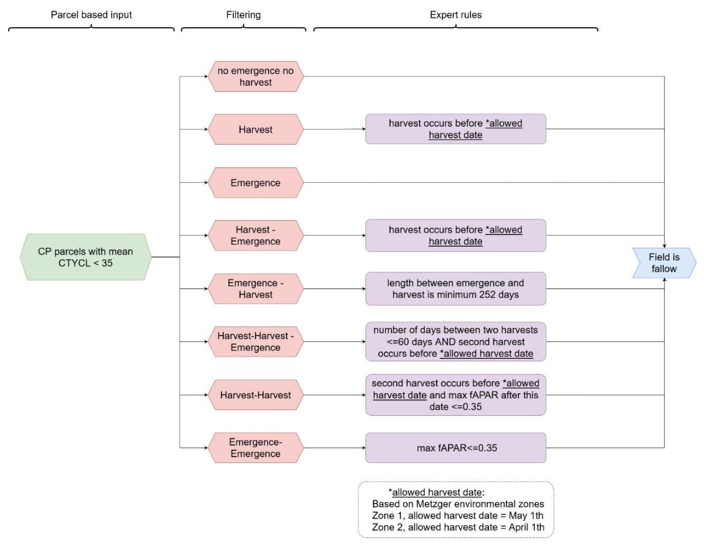
For details on the calculation of the Fallow Land Presence Confidence Layer (FLPCL) please refer to section
Fallow duration
The Fallow Land Duration (FLD) layer is defined as the sum of the yearly FLD over the last fiveyears period. The yearly fallow land duration is calculated as follows:
➢ If a harvest date determines the start of the fallow land period, the length starts at that date until the end of the year.
➢ If the harvest defines the end of the fallow land period, the length starts at the first day of the year until the harvest date.
➢ If there is no harvest detected, the length is set to 365 days.
3.6.5.5 Cropping Seasons
The Cropping Seasons (CL) layers provide some information on the crop type rotation over a three-year period or within a single reference year and consist of the following two layers:
Cropping Seasons Yearly (CSY)
Cropping Season Types over three years (CST)
The CSY layer establishes the number of growing seasons in one year (max. 2) for each selected field used in CP layers generation (only annual crops) and excluding fallow land. If both a secondary season and an annual crop type are identified, it will be counted as two growing seasons. If no secondary season falls within the seasonal limits, but it is classified as an annual crop type, it will be counted as one growing season for that year. In all other scenarios, it will be classified as having no cropping season within the reference year.
The CST layer is solely based on the CTY layer and only considers the annual crop type labels for counting crop rotation. For each reference period of three years, this layer is generated by considering the two years prior to the end of the reference period. As a consequence, the layer is only available from the reference period P2017-2019 onward. During any three-year reference period, the number of unique crop type labels is counted and can range from 1 to 3. Permanent crop labels are not included in the count, and if all three years consist of permanent crops, a value of zero will be assigned. There is one exception to the counting of crop type labels:
If the unclassified arable crop land label appears in any of the three years, it will be excluded from the count to avoid the risk of double counting the same crop type. If the entire period is classified as unclassified arable crop land, the count will be set to one.
3.6.5.6 Encountered issues and known limitations
A limitation of the Fallow Land (FL) layers is that only a subset of fields is considered for fallow land evaluation. Therefore, fallow fields that are not covered by the annual crop type masked parcel delineation product will not be examined and therefore not detected. Furthermore, reference data on fallow land is scarce and often a harmonized definition of fallow land is absent, which makes it hard to evaluate the product. Therefore, it was decided to work with some thematic rules that fit with the expected behavior of fallow land.
The expert rules are defined to determine crop seasonality (section Section 3.6.3.3) for most cases. However, there are still some specific cases that may not be addressed by the seasonal limits defined by the set of expert rules. In such cases, additional checks are needed to determine if the detected seasonality should be included in the CP layers. Some of these cases are discussed below.
In the case where a season does not correspond with any main season in the reference year, it is verified if there is still a season onset after the anticipated period of emergence for spring crops and a harvest event before the conclusion of the reference year. By applying this rule, the seasonality of vegetables that are planted late in the season are included. However, most of these cases involve fallow land with minimal seasonality and are categorized under fallow land layers (see section Section 3.6.5.4).
In the case where multiple spring crops are cultivated on a field, the first detected season is considered as the main season and the second one as the secondary season. In the case two secondary crop seasons occur after the main season, the first one is selected as secondary season. Other exceptions can occur but are not described due to their rare occurrence.
Overall, the applied expert rules cover the most common seasonalities of annual crops, but some limitations exist. For example, in case of too short growing season lengths, some vegetables could be excluded from CP layers generation. However, shortening the allowed seasonal length would include much more expectations in the CP layers, leading to a less reliable product. Moreover, that the shorter the season the more errors could occur in the emergence and harvest detection, resulting in errors in the seasonal delineation.
In the case of double cropping seasons, there are instances where the seasonal labelling conflicts with the crop type label in the CTY layer. For instance, if a winter cereal is followed by maize, the CTY label might classify it as maize, while the season delineation designates the winter cereal season as the main season. This situation is more likely to occur in the southern regions of Europe where the climate allows for double cropping. In these areas, it is also possible for the harvest of winter cereals to coincide with the secondary crop harvest. In such cases, it becomes challenging to differentiate between winter cereals and secondary crops, leading to the possibility of the secondary crop being considered the main season. However, if a spring main crop signal is detected subsequently, it will be recognized as the main season.
In addition to the challenges associated with labeling seasons, issues may arise from the emergence and harvest detection processes themselves. For some specific crops like sunflowers, it is observed that often the seasonal signal is too subtle (Figure 26) to allow any harvest detection. This limitation has been particularly noted during the growing season of 2019 in southern Spain. No training data on this specific crop in this area is available to be able to improve the harvest detection algorithm.
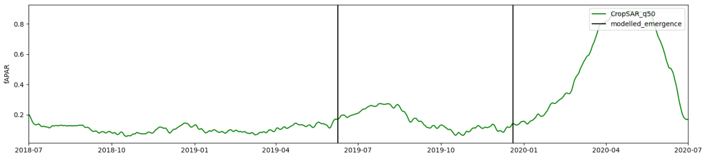
Additionally, in certain scenarios, consecutive emergence events without a corresponding harvest event in between, or vice versa occur. To address these situations, additional rules based on a bare soil indicator are developed to be able to select the correct emergence or harvest dates for linking seasons. However, some cases may still lead to the selection of incorrect emergence or harvest dates, resulting in outliers in seasonal length (either too short or excessively long) or even seasons that fall outside the allowed season boundaries. This issue is particularly prevalent when a secondary crop is planted immediately after the main crops harvest, or when the delineated parcel is a multi-cropped field, leading to emergence/harvest signals that reflect this multi-cropping behavior. Furthermore, in northern regions of Europe where a permanent snow cover occurs before main crops are harvested, the harvest may not be accurately detected, in these cases it impossible to identify any season even when crop cultivation does occur.
Finally, some limitations in the CP layers arise from the filtering of annual crops based on the HRL CTY classification. Specifically, if a field is delineated but not classified as annual cropland in the CTY layer, no CP information is generated for that field—even in cases where annual cropping activity may actually be present. Conversely, false positives in the CTY annual crop classification can introduce artefacts into the CP layers by triggering extraction where no actual annual crop exists.
On the other hand, some annual cropland pixels in the CTY layer lack corresponding field delineations, resulting in missing CP outputs. At the Pan-European scale, approximately 10% of pixels classified as annual crops do not intersect with any delineated field and therefore cannot be assigned CP information. This loss is primarily due to two factors:
5% is due to pixel-level misalignment at field boundaries, regions with more small and elongated fields will have more data loss.
The remaining 5% stems from larger spatial mismatches between the extent of CTY classified annual crop areas and the delineated field geometries. These discrepancies are most pronounced for crop types with lower classification accuracy—such as fresh vegetables, other cereals, and unclassified arable crops.
In contrast, for other (and most common) annual crop classes, around 95% of pixels are successfully aligned with the delineated field boundaries, ensuring reliable CP generation for these key crop types. For these crop types, the pixel misalignment at the field border is the main reason for this 5% loss of CP output.
4 List of abbreviations
| Abbreviation | Name |
|---|---|
| ADs | Applicable Documents |
| AOI | Area of Interest |
| BCD | Broadleaved Cover Density |
| BVL | Base Vegetation Layer |
| CAP | Common Agricultural Policy of the European Union |
| CCD | Coniferous Cover Density |
| CDD | Crop Diversity and Diversification |
| CL | Confidence Layer |
| CLC | CORINE Land Cover |
| CLC+ | CORINE Land Cover + |
| CLMS | Copernicus Land Monitoring Service |
| CORINE | Coordination of information on the environment |
| CROP | Cropland Products |
| CT | Crop Type Layer |
| CTY | Crop Types |
| CTYCL | Crop Types Confidence Layer |
| DEM | Digital Elevation Model |
| DIAS | Copernicus Data and Information Access Services |
| DLT | Dominant Leaf Type |
| DLTC | Dominant Leaf Type Change |
| DLTCL | Dominant Leaf Type Change |
| DTW | Dynamic Time Warp |
| EEA | European Environment Agency |
| EEA38 | The 32 member and 6 cooperating countries of the EEA |
| EO | Earth Observation |
| EPSG | European Petroleum Survey Group |
| ESYRCE | Encuesta sobre Superficies y Rendimientos Cultivos |
| ETC | European Topic Centre |
| EU | European Union |
| EU27 | The 27 member states of the EU |
| EVI | Enhanced Vegetation Index |
| FADSL | Forest Additional Support Layer |
| fAPAR | fraction of Absorbed Photosynthetic Active Radiation |
| FL | Fallow Land |
| Fmask | Function of mask |
| FOR | Forest Products |
| FWC | Framework Contract |
| F-Score | Harmonic mean of the Producer’s and the User’s Accuracies |
| FTY | Forest Type |
| GDAL | Geospatial Data Abstraction Library |
| GRA | Grassland Status Layer |
| GRAC | Grassland Change Layer |
| GRACL | Grassland Confidence Layer |
| GRACCL | Grassland Change Confidence Layer |
| GRAM | Grassland Mowing Events |
| GRAMCL | Grassland Mowing Confidence Layer |
| GRAMD | Grassland Mowing Dates |
| GRAME | Grassland Mowing Events |
| HBS | Harvest and Bare Soil |
| HER | Herbaceous Cover Layer |
| HR | High Resolution |
| HRL / HRLs | High Resolution Layer / High Resolution Layers |
| HRL VLCC | High Resolution Layer – Vegetated Land Cover Characteristics |
| ID | Identification Number |
| JRC | Joint Research Centre |
| KOM | Kick-Off Meeting |
| L2A | Level 2A |
| LAEA | Lambert Azimuthal Equal Area projection |
| LAI | Leaf Area Index |
| LC | Land Cover |
| LiDAR | Light Detection and ranging |
| LPIS | Land-Parcel Identification System |
| LU | Land Use |
| LUCAS | Land Use/ Cover Area frame Survey |
| LULUCF | Land Use, Land Use Change and Forestry |
| MMU | Minimum Mapping Unit |
| NDVI | Normalised Difference Vegetation Index |
| NBR2 | Normalized Burnt Ratio 2 |
| OA | Overall Accuracy |
| OpenEO | API to connect different programming languages to EO cloud back-ends |
| PA | Producer Accuracy |
| PLOUGH | Ploughing Indicator |
| PPT | PowerPoint Presentation |
| PU | Production Unit |
| Rr | Recognition Rate |
| SAR | Synthetic Aperture Radar |
| SC | Specific Contract |
| SCL | Scene Classification Layer |
| Sen2Cor | Processor for Sentinel-2 Level 2A product generation |
| SIGPAC | Sistema de Información Geográfica de Parcelas Agrícolas |
| TBD | To Be Discussed / Defined |
| TCD | Tree Cover Density |
| TCCM | Tree Cover Change Mask |
| TCDCL | Tree Cover Density Confidence Layer |
| TCPC | Tree Cover Presence Change |
| TCPCCL | Tree Cover Presence Change Confidence Layer |
| TempCNN | Temporal Convolutional Neural Network |
| UA | User’s Accuracies |
| USDA | United States Department of Agriculture |
| UTM | Universal Transverse Mercator |
| VHR | Very High Resolution |
| VPP PPI | Vegetation Phenology and Productivity parameters – Plant Phenology Index |
| XML | Extensible Markup Language |
| WEkEO | Copernicus DIAS reference service for environmental data, virtual environments for data processing |
5 References
Alcaras, E., Costantino, D., Guastaferro, F., Parente, C. & Pepe, M. Normalized Burn Ratio Plus (NBR+): A New Index for Sentinel-2 Imagery. remote sensing, vol. 14, no. 7, pp. 1-19, 2022.
Aybar, C., Ysuhuaylas, L., Loja, J., Gonzales, K., Herrera, F., Bautista, L., … & GómezChova, L. (2022). CloudSEN12, a global dataset for semantic understanding of cloud and cloud shadow in Sentinel-2. Scientific Data, 9(1), 782.
Coltuc, D., Bolon, P., & Chassery, J. M. (2006). Exact histogram specification. IEEE Transactions on Image Processing, 15(5), 1143-1152.
“CropSAR service,” VITO, [Online]. Available: https://cropsar.vito.be/api/docs/.[Accessed 24 07 2024].
De Vroey, M., Radoux, J., & Defourny, P. (2021). Grassland mowing detection using sentinel-1 time series: potential and limitations. Remote Sensing, 13(3), 348.
Dorogush, A. V., Ershov, V., & Gulin, A. (2018). CatBoost: gradient boosting with categorical features support. arXiv preprint arXiv:1810.11363.
EEA (2023). EEA38 10m Boundary Layer https://sdi.eea.europa.eu/webdav/datastore/public/eea_r_3035_10_m_copernicus-250m-buffer_p_2012-2018_v02_r00/GTIFF/Boundary_EEA38_03035_010m_v02.tif
Eurostat. (2018). LUCAS Survey 2018. [Data set]. https://ec.europa.eu/eurostat/web/lucas/data/primary-data.
FAO. (2012). Terms and Definitions: FRA 2015. Forest Resources Assessment Working Paper 180. Food and Agriculture Organization of the United Nations, Rome.
Fendrich, A. N., Matthews, F., Van Eynde, E., Carozzi, M., Li, Z., d’Andrimont, R., Lugato, E., Martin, P., Ciais, P., & Panagos, P. (2023). From regional to parcel scale: A highresolution map of cover crops across Europe combining satellite data with statistical surveys. In Science of The Total Environment (Vol. 873, p. 162300). Elsevier BV. https://doi.org/10.1016/j.scitotenv.2023.162300
Gao, F., Anderson, M., Johnson, D., Seffrin, R., Wardlow, B., Suyker, A., Dia, C. & Browning, D. Towards Routine Mapping of Crop Emergence within the Season Using the Harmonized Landsat and Sentinel-2 Dataset. Remote Sensing, vol. 13, no. 24:5074, 2021.
Gao, F., Anderson, M., Zhang, X., Yang, Z., Alfieri, J., Kustas, W., Mueller, R., Johnson, D. & Prueger, J. Toward mapping crop progress at field scales through fusion of Landsat and MODIS imagery. Remote Sensing of Environment, vol. 188, pp. 9-25, 2017.
Garioud, A., Giordano, S., Valero, S., & Mallet, C. (2019, August). Challenges in grassland mowing event detection with multimodal sentinel images. In 2019 10th International Workshop on the Analysis of Multitemporal Remote Sensing Images (MultiTemp) (pp. 1-4). IEEE.
Griffiths, P., Nendel, C., Pickert, J., & Hostert, P. (2020). Towards national-scale characterization of grassland use intensity from integrated Sentinel-2 and Landsat time series. Remote Sensing of Environment, 238, 111124.
Hardy, T., Kooistra, L., Domingues Franceschini, M., Richter, S., Vonk, E., van den Eertwegh, G., & Van Deijl, D. (2021). Sen2Grass: A cloud-based solution to generate field-specific grassland information derived from Sentinel-2 imagery. AgriEngineering, 3(1), 118-137.
Khabbazan, S., Vermunt, P., Steele-Dunne, S., Arntz, L., Marinetti, C., Van der Valk, D., Iannini, L., Molijn, R., Westerdijk, K. & Van der Sande, C. Crop Monitoring Using Sentinel-1 Data: A Case Study from The Netherlands. Remote Sensing, vol. 11, no. 16:1887, 2019.
Kolecka, N., Ginzler, C., Pazur, R., Price, B., & Verburg, P. H. (2018). Regional scale mapping of grassland mowing frequency with sentinel-2 time series. Remote Sensing, 10(8), 1221.
Malinin, A., Prokhorenkova, L., & Ustimenko, A. (2020). Uncertainty in gradient boosting via ensembles. arXiv preprint arXiv:2006.10562.
Meroni, M., D’andrimont, R., Vrieling, A., Fasbender, D., Lemoine, G., Rembold, F., Seguini, L. & Verhegghen, A. Comparing land surface phenology of major European crops as derived from SAR and multispectral data of Sentinel-1 and -2. Remote Sensing of Environment, vol. 253, no. 112232, 2021.
Metzger M.J., Bunce R.G.H., Jongman R.H.G., Sayre R., Trabucco A., Zomer R., Sykes M. (2013). A high-resolution bioclimate map of the world: a unifying framework for global biodiversity research and monitoring. Glob. Ecol. Biogeogr., 22 (5), 630-638.
Metzger, M. J. (2018). The Environmental Stratification of Europe [Dataset]. University of Edinburgh. https://doi.org/10.7488/DS/2356.
Northcutt C., Athalye A., Mueller J. (2021). Pervasive Label Errors in Test Sets Destabilize Machine Learning Benchmarks. Proceedings of the Neural Information Processing Systems Track on Datasets and Benchmarks, 1.
Pelletier, C., Webb, G. I., & Petitjean, F. (2019). Temporal convolutional neural network for the classification of satellite image time series. Remote Sensing, 11(5), 523.
Piccard, I., Gobin, A., Gilliams, S., Tits, L. & Decloedt, J. WatchITgrow. Precision Agriculture: Modelling, Springer, 2023, pp. 229-238.
Reinermann, S., Asam, S., & Kuenzer, C. (2020). Remote sensing of grassland production and management—A review. Remote Sensing, 12(12), 1949.
Reinermann, S., Gessner, U., Asam, S., Ullmann, T., Schucknecht, A., & Kuenzer, C. (2022). Detection of Grassland Mowing Events for Germany by Combining Sentinel-1 and Sentinel-2 Time Series. Remote Sensing, 14(7), 1647.
Salvador, S., & Chan, P. (2007). Toward accurate dynamic time warping in linear time and space. Intelligent Data Analysis, 11(5), 561-580.
Schindler, K. (2012). An overview and comparison of smooth labeling methods for landcover classification. IEEE transactions on geoscience and remote sensing, 50(11), 4534-4545.
Siegmund, R., Redl, S., Wagner, M., & Hartmann, S. (2019, October). Grassland monitoring based on Sentinel-1. In Remote Sensing for Agriculture, Ecosystems, and Hydrology XXI (Vol. 11149, p. 1114902). SPIE.
Stendardi, L., Karlsen, S. R., Niedrist, G., Gerdol, R., Zebisch, M., Rossi, M., & Notarnicola, C. (2019). Exploiting time series of Sentinel-1 and Sentinel-2 imagery to detect meadow phenology in mountain regions. Remote Sensing, 11(5), 542.
Tamm, T., Zalite, K., Voormansik, K., & Talgre, L. (2016). Relating Sentinel-1 interferometric coherence to mowing events on grasslands. Remote Sensing, 8(10), 802.
Van Tricht, K, Gobin, A., Gilliams, S. & Piccard, I. Synergistic Use of Radar Sentinel-1 and Optical Sentinel-2 Imagery for Crop Mapping: A Case Study for Belgium. Remote Sensing, vol. 10, no. 10:1642, 2018.
Vaswani, A., Shazeer, N., Parmar, N., Uszkoreit, J., Jones, L., Gomez, A. N., … & Polosukhin, I. (2017). Attention is all you need. Advances in neural information processing systems, 30.
Zerveas, G., Jayaraman, S., Patel, D., Bhamidipaty, A., & Eickhoff, C. (2021, August). A transformer-based framework for multivariate time series representation learning. In Proceedings of the 27th ACM SIGKDD Conference on Knowledge Discovery & Data Mining (pp. 2114-2124).
6 Annex I - Aggregation rules for 20m layers TCPC, DLTC and GRAC
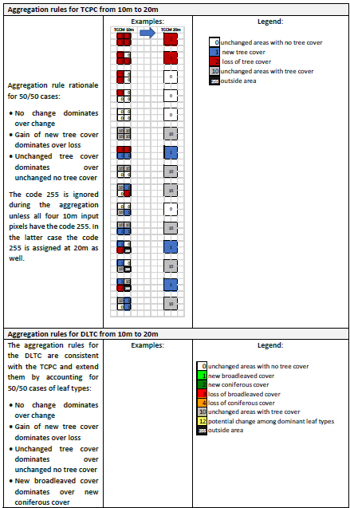
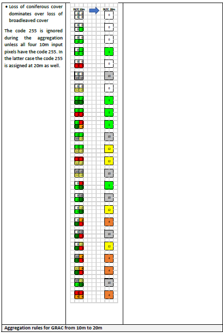
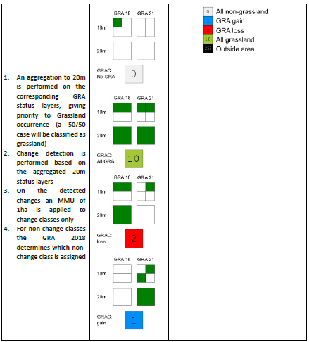
7 Annex II TCPC MMU filtering
The Tree Cover Presence Change is defined with a Minimum Mapping Unit (MMU) of 1 ha. The implementation of an MMU requires several choices and steps which are documented here. The detected gains and losses are initially aggregated to 20m according to the rules defined in Annex II. Holes smaller than the MMU and completely surrounded by either loss or gain are filled according to majority of their surroundings, in situation where no majority can be found the tree cover loss class dominates. Change patches smaller than the MMU are removed in such a way that tree cover gains are recoded as class 10 (unchanged areas with tree cover) and tree cover losses are recoded as class 0 (unchanged areas without tree cover).
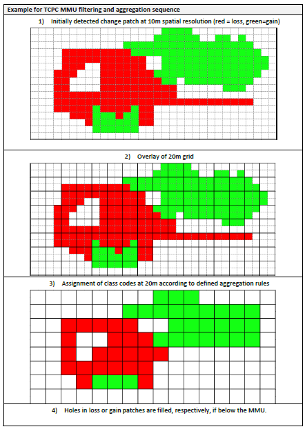
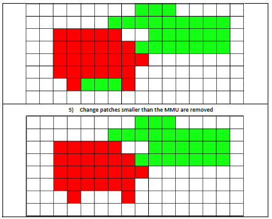
Footnotes
https://gdal.org/en/stable/api/gdal_alg.html#_CPPv415GDALSieveFilter15GDALRasterBandH15GDALRasterBandH15GDALRasterBandHiiPPc16GDALProgressFuncPv↩︎
https://gdal.org/en/stable/api/gdal_alg.html#_CPPv414GDALFillNodata15GDALRasterBandH15GDALRasterBandHdiiPPc16GDALProgressFuncPv↩︎
https://land.copernicus.eu/en/products/corine-land-cover/clc2018↩︎
https://land.copernicus.eu/en/products/high-resolution-layer-grasslands/grassland-2018-raster-10-m-100-m-europe-yearly↩︎
https://land.copernicus.eu/en/products/high-resolution-layer-grasslands/grassland-2018-raster-10-m-100-m-europe-yearly↩︎
https://land.copernicus.eu/en/products/vegetation↩︎
https://land.copernicus.eu/en/products/vegetation↩︎
https://land.copernicus.eu/en/products/vegetation↩︎
https://land.copernicus.eu/en/technical-library/hrl-grassland-2018-product-user-manual↩︎
https://gdal.org/en/stable/api/gdal_alg.html#_CPPv415GDALSieveFilter15GDALRasterBandH15GDALRasterBandH15GDALRasterBandHiiPPc16GDALProgressFuncPv↩︎
https://openeo.org/↩︎